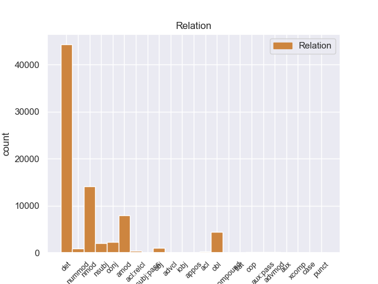
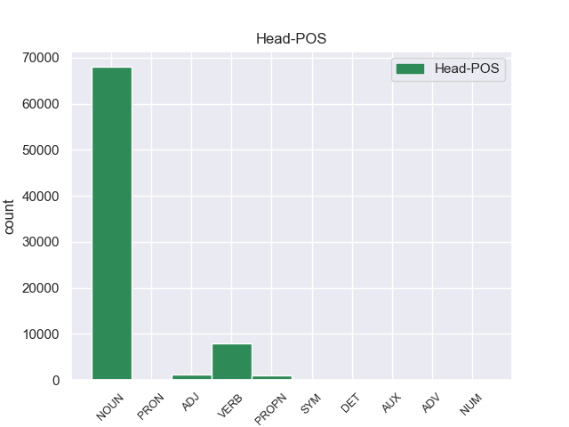
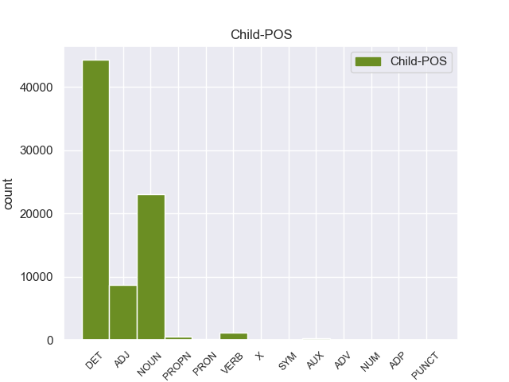

Distribution of features within this leaf



Agreement Rules sorted by frequency.
- When the dependent token is the determiner(det) of the head token, and the dependent token is DET.
1 En _ _ _ _ 0 _ _ _
2 1991 _ _ _ _ 0 _ _ _
3 , _ _ _ _ 0 _ _ _
4 como _ _ _ _ 0 _ _ _
5 ya _ _ _ _ 0 _ _ _
6 está _ _ _ _ 0 _ _ _
7 indicado _ _ _ _ 0 _ _ _
8 en _ _ _ _ 0 _ _ _
9 el _ _ _ _ 0 _ _ _
10 párrafo _ _ _ _ 0 _ _ _
11 anterior _ _ _ _ 0 _ _ _
12 , _ _ _ _ 0 _ _ _
13 se _ _ _ _ 0 _ _ _
14 creó _ _ _ _ 0 _ _ _
15 un _ _ _ _ 0 _ _ _
16 equipo _ _ _ _ 0 _ _ _
17 ad _ _ _ _ 0 _ _ _
18 hoc _ _ _ _ 0 _ _ _
19 para _ _ _ _ 0 _ _ _
20 averiguar _ _ _ _ 0 _ _ _
21 como _ _ _ _ 0 _ _ _
22 se _ _ _ _ 0 _ _ _
23 podía _ _ _ _ 0 _ _ _
24 desarrollar _ _ _ _ 0 _ _ _
25 el _ _ _ _ 0 _ _ _
26 Dialogo _ _ _ _ 0 _ _ _
27 Social _ _ _ _ 0 _ _ _
28 , _ _ _ _ 0 _ _ _
29 este _ _ _ _ 0 _ _ _
30 equipo _ _ _ _ 0 _ _ _
31 estaba _ _ _ _ 0 _ _ _
32 formado _ _ _ _ 0 _ _ _
33 por _ _ _ _ 0 _ _ _
34 representantes _ _ _ _ 0 _ _ _
35 de _ _ _ _ 0 _ _ _
36 todas _ _ _ _ 0 _ _ _
37 las el DET _ Definite=Def|Gender=Fem|Number=Plur|PronType=Art 38 det _ _
38 organizaciones organizacione NOUN _ Gender=Fem|Number=Plur 0 _ _ _
39 relacionadas _ _ _ _ 0 _ _ _
40 con _ _ _ _ 0 _ _ _
41 CES _ _ _ _ 0 _ _ _
42 , _ _ _ _ 0 _ _ _
43 UNICE _ _ _ _ 0 _ _ _
44 y _ _ _ _ 0 _ _ _
45 CEEP _ _ _ _ 0 _ _ _
46 ; _ _ _ _ 0 _ _ _
1 Esta _ _ _ _ 0 _ _ _
2 teoría _ _ _ _ 0 _ _ _
3 se _ _ _ _ 0 _ _ _
4 avenía _ _ _ _ 0 _ _ _
5 bien _ _ _ _ 0 _ _ _
6 con _ _ _ _ 0 _ _ _
7 la _ _ _ _ 0 _ _ _
8 creencia _ _ _ _ 0 _ _ _
9 de _ _ _ _ 0 _ _ _
10 el _ _ _ _ 0 _ _ _
11 Romanticismo _ _ _ _ 0 _ _ _
12 en _ _ _ _ 0 _ _ _
13 un _ _ _ _ 0 _ _ _
14 volkgeist _ _ _ _ 0 _ _ _
15 , _ _ _ _ 0 _ _ _
16 " _ _ _ _ 0 _ _ _
17 genio _ _ _ _ 0 _ _ _
18 o _ _ _ _ 0 _ _ _
19 espíritu espíritu NOUN _ Gender=Masc|Number=Sing 0 _ _ _
20 de _ _ _ _ 0 _ _ _
21 el _ _ _ _ 0 _ _ _
22 pueblo pueblo NOUN _ Gender=Masc|Number=Sing 19 nmod _ _
23 " _ _ _ _ 0 _ _ _
24 , _ _ _ _ 0 _ _ _
25 autor _ _ _ _ 0 _ _ _
26 colectivo _ _ _ _ 0 _ _ _
27 y _ _ _ _ 0 _ _ _
28 anónimo _ _ _ _ 0 _ _ _
29 de _ _ _ _ 0 _ _ _
30 una _ _ _ _ 0 _ _ _
31 poesía _ _ _ _ 0 _ _ _
32 nacional _ _ _ _ 0 _ _ _
33 . _ _ _ _ 0 _ _ _
1 En _ _ _ _ 0 _ _ _
2 1991 _ _ _ _ 0 _ _ _
3 , _ _ _ _ 0 _ _ _
4 como _ _ _ _ 0 _ _ _
5 ya _ _ _ _ 0 _ _ _
6 está _ _ _ _ 0 _ _ _
7 indicado _ _ _ _ 0 _ _ _
8 en _ _ _ _ 0 _ _ _
9 el _ _ _ _ 0 _ _ _
10 párrafo _ _ _ _ 0 _ _ _
11 anterior _ _ _ _ 0 _ _ _
12 , _ _ _ _ 0 _ _ _
13 se _ _ _ _ 0 _ _ _
14 creó _ _ _ _ 0 _ _ _
15 un _ _ _ _ 0 _ _ _
16 equipo equipo NOUN _ Gender=Masc|Number=Sing 0 _ _ _
17 ad _ _ _ _ 0 _ _ _
18 hoc hoc ADJ _ Gender=Masc|Number=Sing 16 amod _ _
19 para _ _ _ _ 0 _ _ _
20 averiguar _ _ _ _ 0 _ _ _
21 como _ _ _ _ 0 _ _ _
22 se _ _ _ _ 0 _ _ _
23 podía _ _ _ _ 0 _ _ _
24 desarrollar _ _ _ _ 0 _ _ _
25 el _ _ _ _ 0 _ _ _
26 Dialogo _ _ _ _ 0 _ _ _
27 Social _ _ _ _ 0 _ _ _
28 , _ _ _ _ 0 _ _ _
29 este _ _ _ _ 0 _ _ _
30 equipo _ _ _ _ 0 _ _ _
31 estaba _ _ _ _ 0 _ _ _
32 formado _ _ _ _ 0 _ _ _
33 por _ _ _ _ 0 _ _ _
34 representantes _ _ _ _ 0 _ _ _
35 de _ _ _ _ 0 _ _ _
36 todas _ _ _ _ 0 _ _ _
37 las _ _ _ _ 0 _ _ _
38 organizaciones _ _ _ _ 0 _ _ _
39 relacionadas _ _ _ _ 0 _ _ _
40 con _ _ _ _ 0 _ _ _
41 CES _ _ _ _ 0 _ _ _
42 , _ _ _ _ 0 _ _ _
43 UNICE _ _ _ _ 0 _ _ _
44 y _ _ _ _ 0 _ _ _
45 CEEP _ _ _ _ 0 _ _ _
46 ; _ _ _ _ 0 _ _ _
1 En _ _ _ _ 0 _ _ _
2 1991 _ _ _ _ 0 _ _ _
3 , _ _ _ _ 0 _ _ _
4 como _ _ _ _ 0 _ _ _
5 ya _ _ _ _ 0 _ _ _
6 está _ _ _ _ 0 _ _ _
7 indicado _ _ _ _ 0 _ _ _
8 en _ _ _ _ 0 _ _ _
9 el _ _ _ _ 0 _ _ _
10 párrafo _ _ _ _ 0 _ _ _
11 anterior _ _ _ _ 0 _ _ _
12 , _ _ _ _ 0 _ _ _
13 se _ _ _ _ 0 _ _ _
14 creó _ _ _ _ 0 _ _ _
15 un _ _ _ _ 0 _ _ _
16 equipo _ _ _ _ 0 _ _ _
17 ad _ _ _ _ 0 _ _ _
18 hoc _ _ _ _ 0 _ _ _
19 para _ _ _ _ 0 _ _ _
20 averiguar _ _ _ _ 0 _ _ _
21 como _ _ _ _ 0 _ _ _
22 se _ _ _ _ 0 _ _ _
23 podía _ _ _ _ 0 _ _ _
24 desarrollar _ _ _ _ 0 _ _ _
25 el _ _ _ _ 0 _ _ _
26 Dialogo _ _ _ _ 0 _ _ _
27 Social _ _ _ _ 0 _ _ _
28 , _ _ _ _ 0 _ _ _
29 este _ _ _ _ 0 _ _ _
30 equipo _ _ _ _ 0 _ _ _
31 estaba _ _ _ _ 0 _ _ _
32 formado formado VERB _ Gender=Masc|Number=Sing|Tense=Past|VerbForm=Part 0 _ _ _
33 por _ _ _ _ 0 _ _ _
34 representantes representante NOUN _ Gender=Masc|Number=Plur 32 obl _ _
35 de _ _ _ _ 0 _ _ _
36 todas _ _ _ _ 0 _ _ _
37 las _ _ _ _ 0 _ _ _
38 organizaciones _ _ _ _ 0 _ _ _
39 relacionadas _ _ _ _ 0 _ _ _
40 con _ _ _ _ 0 _ _ _
41 CES _ _ _ _ 0 _ _ _
42 , _ _ _ _ 0 _ _ _
43 UNICE _ _ _ _ 0 _ _ _
44 y _ _ _ _ 0 _ _ _
45 CEEP _ _ _ _ 0 _ _ _
46 ; _ _ _ _ 0 _ _ _
1 De _ _ _ _ 0 _ _ _
2 los _ _ _ _ 0 _ _ _
3 714 _ _ _ _ 0 _ _ _
4 habitantes _ _ _ _ 0 _ _ _
5 , _ _ _ _ 0 _ _ _
6 el _ _ _ _ 0 _ _ _
7 municipio municipio NOUN _ Gender=Masc|Number=Sing 11 nsubj _ _
8 de _ _ _ _ 0 _ _ _
9 Daggett _ _ _ _ 0 _ _ _
10 estaba _ _ _ _ 0 _ _ _
11 compuesto compuesto VERB _ Gender=Masc|Number=Sing|Tense=Past|VerbForm=Part 0 _ _ _
12 por _ _ _ _ 0 _ _ _
13 el _ _ _ _ 0 _ _ _
14 93.28 _ _ _ _ 0 _ _ _
15 % _ _ _ _ 0 _ _ _
16 blancos _ _ _ _ 0 _ _ _
17 , _ _ _ _ 0 _ _ _
18 el _ _ _ _ 0 _ _ _
19 2.38 _ _ _ _ 0 _ _ _
20 % _ _ _ _ 0 _ _ _
21 eran _ _ _ _ 0 _ _ _
22 afroamericanos _ _ _ _ 0 _ _ _
23 , _ _ _ _ 0 _ _ _
24 el _ _ _ _ 0 _ _ _
25 0.84 _ _ _ _ 0 _ _ _
26 % _ _ _ _ 0 _ _ _
27 eran _ _ _ _ 0 _ _ _
28 amerindios _ _ _ _ 0 _ _ _
29 , _ _ _ _ 0 _ _ _
30 el _ _ _ _ 0 _ _ _
31 0.56 _ _ _ _ 0 _ _ _
32 % _ _ _ _ 0 _ _ _
33 eran _ _ _ _ 0 _ _ _
34 asiáticos _ _ _ _ 0 _ _ _
35 , _ _ _ _ 0 _ _ _
36 el _ _ _ _ 0 _ _ _
37 0 _ _ _ _ 0 _ _ _
38 % _ _ _ _ 0 _ _ _
39 eran _ _ _ _ 0 _ _ _
40 isleños _ _ _ _ 0 _ _ _
41 de _ _ _ _ 0 _ _ _
42 el _ _ _ _ 0 _ _ _
43 Pacífico _ _ _ _ 0 _ _ _
44 , _ _ _ _ 0 _ _ _
45 el _ _ _ _ 0 _ _ _
46 0.84 _ _ _ _ 0 _ _ _
47 % _ _ _ _ 0 _ _ _
48 eran _ _ _ _ 0 _ _ _
49 de _ _ _ _ 0 _ _ _
50 otras _ _ _ _ 0 _ _ _
51 razas _ _ _ _ 0 _ _ _
52 y _ _ _ _ 0 _ _ _
53 el _ _ _ _ 0 _ _ _
54 2.1 _ _ _ _ 0 _ _ _
55 % _ _ _ _ 0 _ _ _
56 pertenecían _ _ _ _ 0 _ _ _
57 a _ _ _ _ 0 _ _ _
58 dos _ _ _ _ 0 _ _ _
59 o _ _ _ _ 0 _ _ _
60 más _ _ _ _ 0 _ _ _
61 razas _ _ _ _ 0 _ _ _
62 . _ _ _ _ 0 _ _ _
1 Esta _ _ _ _ 0 _ _ _
2 teoría _ _ _ _ 0 _ _ _
3 se _ _ _ _ 0 _ _ _
4 avenía _ _ _ _ 0 _ _ _
5 bien _ _ _ _ 0 _ _ _
6 con _ _ _ _ 0 _ _ _
7 la _ _ _ _ 0 _ _ _
8 creencia _ _ _ _ 0 _ _ _
9 de _ _ _ _ 0 _ _ _
10 el _ _ _ _ 0 _ _ _
11 Romanticismo _ _ _ _ 0 _ _ _
12 en _ _ _ _ 0 _ _ _
13 un _ _ _ _ 0 _ _ _
14 volkgeist _ _ _ _ 0 _ _ _
15 , _ _ _ _ 0 _ _ _
16 " _ _ _ _ 0 _ _ _
17 genio genio NOUN _ Gender=Masc|Number=Sing 0 _ _ _
18 o _ _ _ _ 0 _ _ _
19 espíritu espíritu NOUN _ Gender=Masc|Number=Sing 17 conj _ _
20 de _ _ _ _ 0 _ _ _
21 el _ _ _ _ 0 _ _ _
22 pueblo _ _ _ _ 0 _ _ _
23 " _ _ _ _ 0 _ _ _
24 , _ _ _ _ 0 _ _ _
25 autor _ _ _ _ 0 _ _ _
26 colectivo _ _ _ _ 0 _ _ _
27 y _ _ _ _ 0 _ _ _
28 anónimo _ _ _ _ 0 _ _ _
29 de _ _ _ _ 0 _ _ _
30 una _ _ _ _ 0 _ _ _
31 poesía _ _ _ _ 0 _ _ _
32 nacional _ _ _ _ 0 _ _ _
33 . _ _ _ _ 0 _ _ _
1 Ahora _ _ _ _ 0 _ _ _
2 se _ _ _ _ 0 _ _ _
3 aunan _ _ _ _ 0 _ _ _
4 cocina _ _ _ _ 0 _ _ _
5 y _ _ _ _ 0 _ _ _
6 entorno _ _ _ _ 0 _ _ _
7 , _ _ _ _ 0 _ _ _
8 me _ _ _ _ 0 _ _ _
9 encanto _ _ _ _ 0 _ _ _
10 la _ _ _ _ 0 _ _ _
11 bodega _ _ _ _ 0 _ _ _
12 , _ _ _ _ 0 _ _ _
13 las _ _ _ _ 0 _ _ _
14 sillas _ _ _ _ 0 _ _ _
15 son _ _ _ _ 0 _ _ _
16 comodisimas _ _ _ _ 0 _ _ _
17 , _ _ _ _ 0 _ _ _
18 la _ _ _ _ 0 _ _ _
19 iluminacion _ _ _ _ 0 _ _ _
20 es _ _ _ _ 0 _ _ _
21 excepcional _ _ _ _ 0 _ _ _
22 , _ _ _ _ 0 _ _ _
23 alcanzas _ _ _ _ 0 _ _ _
24 un _ _ _ _ 0 _ _ _
25 grado _ _ _ _ 0 _ _ _
26 de _ _ _ _ 0 _ _ _
27 satisfaccion _ _ _ _ 0 _ _ _
28 que _ _ _ _ 0 _ _ _
29 no _ _ _ _ 0 _ _ _
30 se _ _ _ _ 0 _ _ _
31 puede _ _ _ _ 0 _ _ _
32 describir _ _ _ _ 0 _ _ _
33 , _ _ _ _ 0 _ _ _
34 hay _ _ _ _ 0 _ _ _
35 que _ _ _ _ 0 _ _ _
36 probar _ _ _ _ 0 _ _ _
37 lo _ _ _ _ 0 _ _ _
38 , _ _ _ _ 0 _ _ _
39 es _ _ _ _ 0 _ _ _
40 la _ _ _ _ 0 _ _ _
41 primera primero ADJ _ Gender=Fem|Number=Sing|NumType=Ord 42 nummod _ _
42 vez vez NOUN _ Gender=Fem|Number=Sing 0 _ _ _
43 en _ _ _ _ 0 _ _ _
44 mi _ _ _ _ 0 _ _ _
45 vda _ _ _ _ 0 _ _ _
46 que _ _ _ _ 0 _ _ _
47 una _ _ _ _ 0 _ _ _
48 cocina _ _ _ _ 0 _ _ _
49 me _ _ _ _ 0 _ _ _
50 emociona _ _ _ _ 0 _ _ _
51 hasta _ _ _ _ 0 _ _ _
52 ese _ _ _ _ 0 _ _ _
53 punto _ _ _ _ 0 _ _ _
54 . _ _ _ _ 0 _ _ _
1 " _ _ _ _ 0 _ _ _
2 Tenemos _ _ _ _ 0 _ _ _
3 todo _ _ _ _ 0 _ _ _
4 listo _ _ _ _ 0 _ _ _
5 , _ _ _ _ 0 _ _ _
6 la _ _ _ _ 0 _ _ _
7 venta _ _ _ _ 0 _ _ _
8 de _ _ _ _ 0 _ _ _
9 boletos _ _ _ _ 0 _ _ _
10 será _ _ _ _ 0 _ _ _
11 a _ _ _ _ 0 _ _ _
12 partir _ _ _ _ 0 _ _ _
13 de _ _ _ _ 0 _ _ _
14 mañana _ _ _ _ 0 _ _ _
15 de _ _ _ _ 0 _ _ _
16 8 _ _ _ _ 0 _ _ _
17 am _ _ _ _ 0 _ _ _
18 a _ _ _ _ 0 _ _ _
19 3 _ _ _ _ 0 _ _ _
20 pm _ _ _ _ 0 _ _ _
21 , _ _ _ _ 0 _ _ _
22 la _ _ _ _ 0 _ _ _
23 afición _ _ _ _ 0 _ _ _
24 de _ _ _ _ 0 _ _ _
25 el _ _ _ _ 0 _ _ _
26 Real _ _ _ _ 0 _ _ _
27 España _ _ _ _ 0 _ _ _
28 podrá _ _ _ _ 0 _ _ _
29 comprar _ _ _ _ 0 _ _ _
30 en _ _ _ _ 0 _ _ _
31 el _ _ _ _ 0 _ _ _
32 Banco _ _ _ _ 0 _ _ _
33 Continental _ _ _ _ 0 _ _ _
34 , _ _ _ _ 0 _ _ _
35 frente _ _ _ _ 0 _ _ _
36 a _ _ _ _ 0 _ _ _
37 el _ _ _ _ 0 _ _ _
38 estadio _ _ _ _ 0 _ _ _
39 Morazán _ _ _ _ 0 _ _ _
40 , _ _ _ _ 0 _ _ _
41 se _ _ _ _ 0 _ _ _
42 han _ _ _ _ 0 _ _ _
43 puesto puesto VERB _ Gender=Masc|Number=Sing|Tense=Past|VerbForm=Part 0 _ _ _
44 a _ _ _ _ 0 _ _ _
45 la _ _ _ _ 0 _ _ _
46 venta _ _ _ _ 0 _ _ _
47 800 _ _ _ _ 0 _ _ _
48 boletos boleto NOUN _ Gender=Masc|Number=Plur 43 obj _ _
49 , _ _ _ _ 0 _ _ _
50 500 _ _ _ _ 0 _ _ _
51 en _ _ _ _ 0 _ _ _
52 sol _ _ _ _ 0 _ _ _
53 y _ _ _ _ 0 _ _ _
54 300 _ _ _ _ 0 _ _ _
55 en _ _ _ _ 0 _ _ _
56 preferencia _ _ _ _ 0 _ _ _
57 , _ _ _ _ 0 _ _ _
58 la _ _ _ _ 0 _ _ _
59 boletería _ _ _ _ 0 _ _ _
60 de _ _ _ _ 0 _ _ _
61 el _ _ _ _ 0 _ _ _
62 España _ _ _ _ 0 _ _ _
63 está _ _ _ _ 0 _ _ _
64 ya _ _ _ _ 0 _ _ _
65 identificada _ _ _ _ 0 _ _ _
66 con _ _ _ _ 0 _ _ _
67 el _ _ _ _ 0 _ _ _
68 escudo _ _ _ _ 0 _ _ _
69 de _ _ _ _ 0 _ _ _
70 el _ _ _ _ 0 _ _ _
71 equipo _ _ _ _ 0 _ _ _
72 y _ _ _ _ 0 _ _ _
73 con _ _ _ _ 0 _ _ _
74 el _ _ _ _ 0 _ _ _
75 color _ _ _ _ 0 _ _ _
76 amarillo _ _ _ _ 0 _ _ _
77 " _ _ _ _ 0 _ _ _
78 , _ _ _ _ 0 _ _ _
79 comentó _ _ _ _ 0 _ _ _
80 Rolin _ _ _ _ 0 _ _ _
81 . _ _ _ _ 0 _ _ _
1 A _ _ _ _ 0 _ _ _
2 continuación _ _ _ _ 0 _ _ _
3 , _ _ _ _ 0 _ _ _
4 sonarán _ _ _ _ 0 _ _ _
5 los _ _ _ _ 0 _ _ _
6 ritmos _ _ _ _ 0 _ _ _
7 más _ _ _ _ 0 _ _ _
8 intensos _ _ _ _ 0 _ _ _
9 de _ _ _ _ 0 _ _ _
10 los _ _ _ _ 0 _ _ _
11 llanos _ _ _ _ 0 _ _ _
12 interpretados _ _ _ _ 0 _ _ _
13 por _ _ _ _ 0 _ _ _
14 una _ _ _ _ 0 _ _ _
15 agrupación _ _ _ _ 0 _ _ _
16 que _ _ _ _ 0 _ _ _
17 romperá _ _ _ _ 0 _ _ _
18 esquemas _ _ _ _ 0 _ _ _
19 : _ _ _ _ 0 _ _ _
20 el _ _ _ _ 0 _ _ _
21 Ensamble _ _ _ _ 0 _ _ _
22 de _ _ _ _ 0 _ _ _
23 Arpas _ _ _ _ 0 _ _ _
24 de _ _ _ _ 0 _ _ _
25 la _ _ _ _ 0 _ _ _
26 Orquesta _ _ _ _ 0 _ _ _
27 de _ _ _ _ 0 _ _ _
28 Música _ _ _ _ 0 _ _ _
29 Popular _ _ _ _ 0 _ _ _
30 de _ _ _ _ 0 _ _ _
31 el _ _ _ _ 0 _ _ _
32 Estado _ _ _ _ 0 _ _ _
33 Guárico _ _ _ _ 0 _ _ _
34 , _ _ _ _ 0 _ _ _
35 integrado _ _ _ _ 0 _ _ _
36 por _ _ _ _ 0 _ _ _
37 14 _ _ _ _ 0 _ _ _
38 ejecutantes _ _ _ _ 0 _ _ _
39 , _ _ _ _ 0 _ _ _
40 todos _ _ _ _ 0 _ _ _
41 formados _ _ _ _ 0 _ _ _
42 por _ _ _ _ 0 _ _ _
43 El _ _ _ _ 0 _ _ _
44 Sistema _ _ _ _ 0 _ _ _
45 , _ _ _ _ 0 _ _ _
46 siendo _ _ _ _ 0 _ _ _
47 algunos _ _ _ _ 0 _ _ _
48 de _ _ _ _ 0 _ _ _
49 ellos _ _ _ _ 0 _ _ _
50 ganadores _ _ _ _ 0 _ _ _
51 de _ _ _ _ 0 _ _ _
52 el _ _ _ _ 0 _ _ _
53 reconocido reconocido NOUN _ Gender=Masc|Number=Sing 54 amod _ _
54 Festival festival NOUN _ Gender=Masc|Number=Sing 0 _ _ _
55 Internacional _ _ _ _ 0 _ _ _
56 de _ _ _ _ 0 _ _ _
57 Arpas _ _ _ _ 0 _ _ _
58 Infantil _ _ _ _ 0 _ _ _
59 y _ _ _ _ 0 _ _ _
60 Adultos _ _ _ _ 0 _ _ _
61 de _ _ _ _ 0 _ _ _
62 Villavicencio _ _ _ _ 0 _ _ _
63 , _ _ _ _ 0 _ _ _
64 Colombia _ _ _ _ 0 _ _ _
65 . _ _ _ _ 0 _ _ _
1 Esta _ _ _ _ 0 _ _ _
2 teoría _ _ _ _ 0 _ _ _
3 se _ _ _ _ 0 _ _ _
4 avenía _ _ _ _ 0 _ _ _
5 bien _ _ _ _ 0 _ _ _
6 con _ _ _ _ 0 _ _ _
7 la _ _ _ _ 0 _ _ _
8 creencia _ _ _ _ 0 _ _ _
9 de _ _ _ _ 0 _ _ _
10 el _ _ _ _ 0 _ _ _
11 Romanticismo _ _ _ _ 0 _ _ _
12 en _ _ _ _ 0 _ _ _
13 un _ _ _ _ 0 _ _ _
14 volkgeist _ _ _ _ 0 _ _ _
15 , _ _ _ _ 0 _ _ _
16 " _ _ _ _ 0 _ _ _
17 genio _ _ _ _ 0 _ _ _
18 o _ _ _ _ 0 _ _ _
19 espíritu _ _ _ _ 0 _ _ _
20 de _ _ _ _ 0 _ _ _
21 el _ _ _ _ 0 _ _ _
22 pueblo _ _ _ _ 0 _ _ _
23 " _ _ _ _ 0 _ _ _
24 , _ _ _ _ 0 _ _ _
25 autor autor NOUN _ Gender=Masc|Number=Sing 0 _ _ _
26 colectivo _ _ _ _ 0 _ _ _
27 y _ _ _ _ 0 _ _ _
28 anónimo anónimo ADJ _ Gender=Masc|Number=Sing 25 conj _ _
29 de _ _ _ _ 0 _ _ _
30 una _ _ _ _ 0 _ _ _
31 poesía _ _ _ _ 0 _ _ _
32 nacional _ _ _ _ 0 _ _ _
33 . _ _ _ _ 0 _ _ _
1 En _ _ _ _ 0 _ _ _
2 1991 _ _ _ _ 0 _ _ _
3 , _ _ _ _ 0 _ _ _
4 como _ _ _ _ 0 _ _ _
5 ya _ _ _ _ 0 _ _ _
6 está _ _ _ _ 0 _ _ _
7 indicado indicado VERB _ Gender=Masc|Number=Sing|Tense=Past|VerbForm=Part 16 acl:relcl _ _
8 en _ _ _ _ 0 _ _ _
9 el _ _ _ _ 0 _ _ _
10 párrafo _ _ _ _ 0 _ _ _
11 anterior _ _ _ _ 0 _ _ _
12 , _ _ _ _ 0 _ _ _
13 se _ _ _ _ 0 _ _ _
14 creó _ _ _ _ 0 _ _ _
15 un _ _ _ _ 0 _ _ _
16 equipo equipo NOUN _ Gender=Masc|Number=Sing 0 _ _ _
17 ad _ _ _ _ 0 _ _ _
18 hoc _ _ _ _ 0 _ _ _
19 para _ _ _ _ 0 _ _ _
20 averiguar _ _ _ _ 0 _ _ _
21 como _ _ _ _ 0 _ _ _
22 se _ _ _ _ 0 _ _ _
23 podía _ _ _ _ 0 _ _ _
24 desarrollar _ _ _ _ 0 _ _ _
25 el _ _ _ _ 0 _ _ _
26 Dialogo _ _ _ _ 0 _ _ _
27 Social _ _ _ _ 0 _ _ _
28 , _ _ _ _ 0 _ _ _
29 este _ _ _ _ 0 _ _ _
30 equipo _ _ _ _ 0 _ _ _
31 estaba _ _ _ _ 0 _ _ _
32 formado _ _ _ _ 0 _ _ _
33 por _ _ _ _ 0 _ _ _
34 representantes _ _ _ _ 0 _ _ _
35 de _ _ _ _ 0 _ _ _
36 todas _ _ _ _ 0 _ _ _
37 las _ _ _ _ 0 _ _ _
38 organizaciones _ _ _ _ 0 _ _ _
39 relacionadas _ _ _ _ 0 _ _ _
40 con _ _ _ _ 0 _ _ _
41 CES _ _ _ _ 0 _ _ _
42 , _ _ _ _ 0 _ _ _
43 UNICE _ _ _ _ 0 _ _ _
44 y _ _ _ _ 0 _ _ _
45 CEEP _ _ _ _ 0 _ _ _
46 ; _ _ _ _ 0 _ _ _
1 Con _ _ _ _ 0 _ _ _
2 miras _ _ _ _ 0 _ _ _
3 a _ _ _ _ 0 _ _ _
4 minimizar _ _ _ _ 0 _ _ _
5 cualquier _ _ _ _ 0 _ _ _
6 confusión _ _ _ _ 0 _ _ _
7 con _ _ _ _ 0 _ _ _
8 una _ _ _ _ 0 _ _ _
9 religión _ _ _ _ 0 _ _ _
10 , _ _ _ _ 0 _ _ _
11 el _ _ _ _ 0 _ _ _
12 uso _ _ _ _ 0 _ _ _
13 de _ _ _ _ 0 _ _ _
14 la _ _ _ _ 0 _ _ _
15 palabra _ _ _ _ 0 _ _ _
16 " _ _ _ _ 0 _ _ _
17 templo _ _ _ _ 0 _ _ _
18 " _ _ _ _ 0 _ _ _
19 para _ _ _ _ 0 _ _ _
20 describir _ _ _ _ 0 _ _ _
21 los _ _ _ _ 0 _ _ _
22 inmuebles _ _ _ _ 0 _ _ _
23 de _ _ _ _ 0 _ _ _
24 los _ _ _ _ 0 _ _ _
25 Shriners _ _ _ _ 0 _ _ _
26 ha _ _ _ _ 0 _ _ _
27 sido _ _ _ _ 0 _ _ _
28 reemplazado reemplazado VERB _ Gender=Masc|Number=Sing|Tense=Past|VerbForm=Part 0 _ _ _
29 por _ _ _ _ 0 _ _ _
30 la _ _ _ _ 0 _ _ _
31 frase _ _ _ _ 0 _ _ _
32 " _ _ _ _ 0 _ _ _
33 Centro _ _ _ _ 0 _ _ _
34 Shriner _ _ _ _ 0 _ _ _
35 " _ _ _ _ 0 _ _ _
36 , _ _ _ _ 0 _ _ _
37 aunque _ _ _ _ 0 _ _ _
38 en _ _ _ _ 0 _ _ _
39 capítulos _ _ _ _ 0 _ _ _
40 individuales _ _ _ _ 0 _ _ _
41 siguen _ _ _ _ 0 _ _ _
42 siendo _ _ _ _ 0 _ _ _
43 nombrados nombrado VERB _ Gender=Masc|Number=Sing|Tense=Past|VerbForm=Part 28 conj _ _
44 como _ _ _ _ 0 _ _ _
45 " _ _ _ _ 0 _ _ _
46 templos _ _ _ _ 0 _ _ _
47 " _ _ _ _ 0 _ _ _
48 . _ _ _ _ 0 _ _ _
1 El _ _ _ _ 0 _ _ _
2 mismo _ _ _ _ 0 _ _ _
3 investigador _ _ _ _ 0 _ _ _
4 ha _ _ _ _ 0 _ _ _
5 informado _ _ _ _ 0 _ _ _
6 recientemente _ _ _ _ 0 _ _ _
7 de _ _ _ _ 0 _ _ _
8 el _ _ _ _ 0 _ _ _
9 primer primer NOUN _ Gender=Masc|Number=Sing 10 nummod _ _
10 caso caso NOUN _ Gender=Masc|Number=Sing 0 _ _ _
11 documentado _ _ _ _ 0 _ _ _
12 de _ _ _ _ 0 _ _ _
13 una _ _ _ _ 0 _ _ _
14 plaga _ _ _ _ 0 _ _ _
15 resistente _ _ _ _ 0 _ _ _
16 a _ _ _ _ 0 _ _ _
17 el _ _ _ _ 0 _ _ _
18 algodón _ _ _ _ 0 _ _ _
19 transgénico _ _ _ _ 0 _ _ _
20 . _ _ _ _ 0 _ _ _
1 De _ _ _ _ 0 _ _ _
2 los _ _ _ _ 0 _ _ _
3 714 _ _ _ _ 0 _ _ _
4 habitantes _ _ _ _ 0 _ _ _
5 , _ _ _ _ 0 _ _ _
6 el _ _ _ _ 0 _ _ _
7 municipio _ _ _ _ 0 _ _ _
8 de _ _ _ _ 0 _ _ _
9 Daggett _ _ _ _ 0 _ _ _
10 estaba _ _ _ _ 0 _ _ _
11 compuesto _ _ _ _ 0 _ _ _
12 por _ _ _ _ 0 _ _ _
13 el _ _ _ _ 0 _ _ _
14 93.28 _ _ _ _ 0 _ _ _
15 % _ _ _ _ 0 _ _ _
16 blancos _ _ _ _ 0 _ _ _
17 , _ _ _ _ 0 _ _ _
18 el _ _ _ _ 0 _ _ _
19 2.38 _ _ _ _ 0 _ _ _
20 % _ _ _ _ 0 _ _ _
21 eran _ _ _ _ 0 _ _ _
22 afroamericanos _ _ _ _ 0 _ _ _
23 , _ _ _ _ 0 _ _ _
24 el _ _ _ _ 0 _ _ _
25 0.84 _ _ _ _ 0 _ _ _
26 % _ _ _ _ 0 _ _ _
27 eran _ _ _ _ 0 _ _ _
28 amerindios _ _ _ _ 0 _ _ _
29 , _ _ _ _ 0 _ _ _
30 el _ _ _ _ 0 _ _ _
31 0.56 _ _ _ _ 0 _ _ _
32 % _ _ _ _ 0 _ _ _
33 eran _ _ _ _ 0 _ _ _
34 asiáticos _ _ _ _ 0 _ _ _
35 , _ _ _ _ 0 _ _ _
36 el _ _ _ _ 0 _ _ _
37 0 _ _ _ _ 0 _ _ _
38 % _ _ _ _ 0 _ _ _
39 eran _ _ _ _ 0 _ _ _
40 isleños isleños NOUN _ Gender=Masc|Number=Plur 0 _ _ _
41 de _ _ _ _ 0 _ _ _
42 el _ _ _ _ 0 _ _ _
43 Pacífico pacífico PROPN _ Gender=Masc|Number=Sing 40 nmod _ _
44 , _ _ _ _ 0 _ _ _
45 el _ _ _ _ 0 _ _ _
46 0.84 _ _ _ _ 0 _ _ _
47 % _ _ _ _ 0 _ _ _
48 eran _ _ _ _ 0 _ _ _
49 de _ _ _ _ 0 _ _ _
50 otras _ _ _ _ 0 _ _ _
51 razas _ _ _ _ 0 _ _ _
52 y _ _ _ _ 0 _ _ _
53 el _ _ _ _ 0 _ _ _
54 2.1 _ _ _ _ 0 _ _ _
55 % _ _ _ _ 0 _ _ _
56 pertenecían _ _ _ _ 0 _ _ _
57 a _ _ _ _ 0 _ _ _
58 dos _ _ _ _ 0 _ _ _
59 o _ _ _ _ 0 _ _ _
60 más _ _ _ _ 0 _ _ _
61 razas _ _ _ _ 0 _ _ _
62 . _ _ _ _ 0 _ _ _
1 Saint _ _ _ _ 0 _ _ _
2 - _ _ _ _ 0 _ _ _
3 Hippolyte _ _ _ _ 0 _ _ _
4 ( _ _ _ _ 0 _ _ _
5 en _ _ _ _ 0 _ _ _
6 occitano _ _ _ _ 0 _ _ _
7 Sent _ _ _ _ 0 _ _ _
8 Ipòli _ _ _ _ 0 _ _ _
9 ) _ _ _ _ 0 _ _ _
10 es _ _ _ _ 0 _ _ _
11 una _ _ _ _ 0 _ _ _
12 población población NOUN _ Gender=Fem|Number=Sing 0 _ _ _
13 y _ _ _ _ 0 _ _ _
14 comuna _ _ _ _ 0 _ _ _
15 francesa _ _ _ _ 0 _ _ _
16 , _ _ _ _ 0 _ _ _
17 situada situada VERB _ Gender=Fem|Number=Sing 12 acl _ _
18 en _ _ _ _ 0 _ _ _
19 la _ _ _ _ 0 _ _ _
20 región _ _ _ _ 0 _ _ _
21 de _ _ _ _ 0 _ _ _
22 Aquitania _ _ _ _ 0 _ _ _
23 , _ _ _ _ 0 _ _ _
24 departamento _ _ _ _ 0 _ _ _
25 de _ _ _ _ 0 _ _ _
26 Gironda _ _ _ _ 0 _ _ _
27 , _ _ _ _ 0 _ _ _
28 en _ _ _ _ 0 _ _ _
29 el _ _ _ _ 0 _ _ _
30 distrito _ _ _ _ 0 _ _ _
31 de _ _ _ _ 0 _ _ _
32 Libourne _ _ _ _ 0 _ _ _
33 y _ _ _ _ 0 _ _ _
34 cantón _ _ _ _ 0 _ _ _
35 de _ _ _ _ 0 _ _ _
36 Castillon _ _ _ _ 0 _ _ _
37 - _ _ _ _ 0 _ _ _
38 la _ _ _ _ 0 _ _ _
39 - _ _ _ _ 0 _ _ _
40 Bataille _ _ _ _ 0 _ _ _
41 . _ _ _ _ 0 _ _ _
1 En _ _ _ _ 0 _ _ _
2 estos _ _ _ _ 0 _ _ _
3 trabajos _ _ _ _ 0 _ _ _
4 se _ _ _ _ 0 _ _ _
5 pusieron _ _ _ _ 0 _ _ _
6 a _ _ _ _ 0 _ _ _
7 el _ _ _ _ 0 _ _ _
8 descubierto _ _ _ _ 0 _ _ _
9 25 _ _ _ _ 0 _ _ _
10 vanos _ _ _ _ 0 _ _ _
11 correspondientes _ _ _ _ 0 _ _ _
12 a _ _ _ _ 0 _ _ _
13 ventanas _ _ _ _ 0 _ _ _
14 saeteras _ _ _ _ 0 _ _ _
15 que _ _ _ _ 0 _ _ _
16 habían _ _ _ _ 0 _ _ _
17 sido ser AUX _ Gender=Masc|Number=Sing|Tense=Past|VerbForm=Part 18 aux:pass _ _
18 tapiadas tapiadas VERB _ Gender=Masc|Number=Sing|Tense=Past|VerbForm=Part 0 _ _ _
19 en _ _ _ _ 0 _ _ _
20 los _ _ _ _ 0 _ _ _
21 siglos _ _ _ _ 0 _ _ _
22 anteriores _ _ _ _ 0 _ _ _
23 . _ _ _ _ 0 _ _ _
1 Pelecanimimus _ _ _ _ 0 _ _ _
2 ( _ _ _ _ 0 _ _ _
3 gr. _ _ _ _ 0 _ _ _
4 " _ _ _ _ 0 _ _ _
5 imitador _ _ _ _ 0 _ _ _
6 de _ _ _ _ 0 _ _ _
7 pelícanos _ _ _ _ 0 _ _ _
8 " _ _ _ _ 0 _ _ _
9 ) _ _ _ _ 0 _ _ _
10 es _ _ _ _ 0 _ _ _
11 un _ _ _ _ 0 _ _ _
12 género género NOUN _ Gender=Masc|Number=Sing 0 _ _ _
13 representado representado ADJ _ Gender=Masc|Number=Sing|VerbForm=Part 12 acl _ _
14 por _ _ _ _ 0 _ _ _
15 una _ _ _ _ 0 _ _ _
16 única _ _ _ _ 0 _ _ _
17 especie _ _ _ _ 0 _ _ _
18 de _ _ _ _ 0 _ _ _
19 dinosaurio _ _ _ _ 0 _ _ _
20 terópodo _ _ _ _ 0 _ _ _
21 ornitomimosauriano _ _ _ _ 0 _ _ _
22 basal _ _ _ _ 0 _ _ _
23 , _ _ _ _ 0 _ _ _
24 que _ _ _ _ 0 _ _ _
25 vivió _ _ _ _ 0 _ _ _
26 a _ _ _ _ 0 _ _ _
27 principios _ _ _ _ 0 _ _ _
28 de _ _ _ _ 0 _ _ _
29 el _ _ _ _ 0 _ _ _
30 período _ _ _ _ 0 _ _ _
31 Cretácico _ _ _ _ 0 _ _ _
32 , _ _ _ _ 0 _ _ _
33 hace _ _ _ _ 0 _ _ _
34 algo _ _ _ _ 0 _ _ _
35 más _ _ _ _ 0 _ _ _
36 de _ _ _ _ 0 _ _ _
37 125 _ _ _ _ 0 _ _ _
38 millones _ _ _ _ 0 _ _ _
39 de _ _ _ _ 0 _ _ _
40 años _ _ _ _ 0 _ _ _
41 , _ _ _ _ 0 _ _ _
42 en _ _ _ _ 0 _ _ _
43 el _ _ _ _ 0 _ _ _
44 Barremiense _ _ _ _ 0 _ _ _
45 , _ _ _ _ 0 _ _ _
46 en _ _ _ _ 0 _ _ _
47 lo _ _ _ _ 0 _ _ _
48 que _ _ _ _ 0 _ _ _
49 es _ _ _ _ 0 _ _ _
50 hoy _ _ _ _ 0 _ _ _
51 Europa _ _ _ _ 0 _ _ _
52 . _ _ _ _ 0 _ _ _
1 De _ _ _ _ 0 _ _ _
2 la _ _ _ _ 0 _ _ _
3 Vega _ _ _ _ 0 _ _ _
4 ha _ _ _ _ 0 _ _ _
5 pedido _ _ _ _ 0 _ _ _
6 respetar respetar VERB _ Gender=Masc|Number=Sing|Tense=Past|VerbForm=Part 0 _ _ _
7 los _ _ _ _ 0 _ _ _
8 tiempos _ _ _ _ 0 _ _ _
9 de _ _ _ _ 0 _ _ _
10 los _ _ _ _ 0 _ _ _
11 procesos _ _ _ _ 0 _ _ _
12 y _ _ _ _ 0 _ _ _
13 de _ _ _ _ 0 _ _ _
14 la _ _ _ _ 0 _ _ _
15 misma _ _ _ _ 0 _ _ _
16 manera _ _ _ _ 0 _ _ _
17 que _ _ _ _ 0 _ _ _
18 no _ _ _ _ 0 _ _ _
19 ha _ _ _ _ 0 _ _ _
20 querido _ _ _ _ 0 _ _ _
21 entrar _ _ _ _ 0 _ _ _
22 en _ _ _ _ 0 _ _ _
23 la _ _ _ _ 0 _ _ _
24 salida _ _ _ _ 0 _ _ _
25 de _ _ _ _ 0 _ _ _
26 Corbacho _ _ _ _ 0 _ _ _
27 , _ _ _ _ 0 _ _ _
28 tampoco _ _ _ _ 0 _ _ _
29 lo _ _ _ _ 0 _ _ _
30 ha _ _ _ _ 0 _ _ _
31 hecho hecho VERB _ Gender=Masc|Number=Sing|Tense=Past|VerbForm=Part 6 advcl _ _
32 la _ _ _ _ 0 _ _ _
33 posible _ _ _ _ 0 _ _ _
34 salida _ _ _ _ 0 _ _ _
35 de _ _ _ _ 0 _ _ _
36 Trinidad _ _ _ _ 0 _ _ _
37 Jiménez _ _ _ _ 0 _ _ _
38 , _ _ _ _ 0 _ _ _
39 que _ _ _ _ 0 _ _ _
40 le _ _ _ _ 0 _ _ _
41 acompañaba _ _ _ _ 0 _ _ _
42 en _ _ _ _ 0 _ _ _
43 la _ _ _ _ 0 _ _ _
44 sala _ _ _ _ 0 _ _ _
45 de _ _ _ _ 0 _ _ _
46 prensa _ _ _ _ 0 _ _ _
47 . _ _ _ _ 0 _ _ _
1 A _ _ _ _ 0 _ _ _
2 continuación _ _ _ _ 0 _ _ _
3 , _ _ _ _ 0 _ _ _
4 sonarán _ _ _ _ 0 _ _ _
5 los _ _ _ _ 0 _ _ _
6 ritmos _ _ _ _ 0 _ _ _
7 más _ _ _ _ 0 _ _ _
8 intensos _ _ _ _ 0 _ _ _
9 de _ _ _ _ 0 _ _ _
10 los _ _ _ _ 0 _ _ _
11 llanos _ _ _ _ 0 _ _ _
12 interpretados _ _ _ _ 0 _ _ _
13 por _ _ _ _ 0 _ _ _
14 una _ _ _ _ 0 _ _ _
15 agrupación _ _ _ _ 0 _ _ _
16 que _ _ _ _ 0 _ _ _
17 romperá _ _ _ _ 0 _ _ _
18 esquemas _ _ _ _ 0 _ _ _
19 : _ _ _ _ 0 _ _ _
20 el _ _ _ _ 0 _ _ _
21 Ensamble _ _ _ _ 0 _ _ _
22 de _ _ _ _ 0 _ _ _
23 Arpas _ _ _ _ 0 _ _ _
24 de _ _ _ _ 0 _ _ _
25 la _ _ _ _ 0 _ _ _
26 Orquesta _ _ _ _ 0 _ _ _
27 de _ _ _ _ 0 _ _ _
28 Música _ _ _ _ 0 _ _ _
29 Popular _ _ _ _ 0 _ _ _
30 de _ _ _ _ 0 _ _ _
31 el _ _ _ _ 0 _ _ _
32 Estado _ _ _ _ 0 _ _ _
33 Guárico _ _ _ _ 0 _ _ _
34 , _ _ _ _ 0 _ _ _
35 integrado _ _ _ _ 0 _ _ _
36 por _ _ _ _ 0 _ _ _
37 14 _ _ _ _ 0 _ _ _
38 ejecutantes _ _ _ _ 0 _ _ _
39 , _ _ _ _ 0 _ _ _
40 todos _ _ _ _ 0 _ _ _
41 formados formados VERB _ Gender=Masc|Number=Sing|VerbForm=Part 0 _ _ _
42 por _ _ _ _ 0 _ _ _
43 El _ _ _ _ 0 _ _ _
44 Sistema sistema PROPN _ Gender=Masc|Number=Sing 41 obl _ _
45 , _ _ _ _ 0 _ _ _
46 siendo _ _ _ _ 0 _ _ _
47 algunos _ _ _ _ 0 _ _ _
48 de _ _ _ _ 0 _ _ _
49 ellos _ _ _ _ 0 _ _ _
50 ganadores _ _ _ _ 0 _ _ _
51 de _ _ _ _ 0 _ _ _
52 el _ _ _ _ 0 _ _ _
53 reconocido _ _ _ _ 0 _ _ _
54 Festival _ _ _ _ 0 _ _ _
55 Internacional _ _ _ _ 0 _ _ _
56 de _ _ _ _ 0 _ _ _
57 Arpas _ _ _ _ 0 _ _ _
58 Infantil _ _ _ _ 0 _ _ _
59 y _ _ _ _ 0 _ _ _
60 Adultos _ _ _ _ 0 _ _ _
61 de _ _ _ _ 0 _ _ _
62 Villavicencio _ _ _ _ 0 _ _ _
63 , _ _ _ _ 0 _ _ _
64 Colombia _ _ _ _ 0 _ _ _
65 . _ _ _ _ 0 _ _ _
1 Contrario _ _ _ _ 0 _ _ _
2 a _ _ _ _ 0 _ _ _
3 cualquiera _ _ _ _ 0 _ _ _
4 otra _ _ _ _ 0 _ _ _
5 apreciación _ _ _ _ 0 _ _ _
6 que _ _ _ _ 0 _ _ _
7 le _ _ _ _ 0 _ _ _
8 de _ _ _ _ 0 _ _ _
9 relevancia _ _ _ _ 0 _ _ _
10 o _ _ _ _ 0 _ _ _
11 sentido sentido NOUN _ Gender=Masc|Number=Sing 0 _ _ _
12 ( _ _ _ _ 0 _ _ _
13 por _ _ _ _ 0 _ _ _
14 ejemplo _ _ _ _ 0 _ _ _
15 , _ _ _ _ 0 _ _ _
16 que _ _ _ _ 0 _ _ _
17 sea _ _ _ _ 0 _ _ _
18 " _ _ _ _ 0 _ _ _
19 hermoso hermoso ADJ _ Gender=Masc|Number=Sing 11 nmod _ _
20 " _ _ _ _ 0 _ _ _
21 ) _ _ _ _ 0 _ _ _
22 posiblemente _ _ _ _ 0 _ _ _
23 genere _ _ _ _ 0 _ _ _
24 alguna _ _ _ _ 0 _ _ _
25 objeción _ _ _ _ 0 _ _ _
26 o _ _ _ _ 0 _ _ _
27 contradicción _ _ _ _ 0 _ _ _
28 . _ _ _ _ 0 _ _ _
1 A _ _ _ _ 0 _ _ _
2 continuación _ _ _ _ 0 _ _ _
3 , _ _ _ _ 0 _ _ _
4 sonarán _ _ _ _ 0 _ _ _
5 los _ _ _ _ 0 _ _ _
6 ritmos _ _ _ _ 0 _ _ _
7 más _ _ _ _ 0 _ _ _
8 intensos _ _ _ _ 0 _ _ _
9 de _ _ _ _ 0 _ _ _
10 los _ _ _ _ 0 _ _ _
11 llanos _ _ _ _ 0 _ _ _
12 interpretados _ _ _ _ 0 _ _ _
13 por _ _ _ _ 0 _ _ _
14 una _ _ _ _ 0 _ _ _
15 agrupación _ _ _ _ 0 _ _ _
16 que _ _ _ _ 0 _ _ _
17 romperá _ _ _ _ 0 _ _ _
18 esquemas _ _ _ _ 0 _ _ _
19 : _ _ _ _ 0 _ _ _
20 el _ _ _ _ 0 _ _ _
21 Ensamble _ _ _ _ 0 _ _ _
22 de _ _ _ _ 0 _ _ _
23 Arpas _ _ _ _ 0 _ _ _
24 de _ _ _ _ 0 _ _ _
25 la _ _ _ _ 0 _ _ _
26 Orquesta _ _ _ _ 0 _ _ _
27 de _ _ _ _ 0 _ _ _
28 Música _ _ _ _ 0 _ _ _
29 Popular _ _ _ _ 0 _ _ _
30 de _ _ _ _ 0 _ _ _
31 el _ _ _ _ 0 _ _ _
32 Estado _ _ _ _ 0 _ _ _
33 Guárico _ _ _ _ 0 _ _ _
34 , _ _ _ _ 0 _ _ _
35 integrado _ _ _ _ 0 _ _ _
36 por _ _ _ _ 0 _ _ _
37 14 _ _ _ _ 0 _ _ _
38 ejecutantes _ _ _ _ 0 _ _ _
39 , _ _ _ _ 0 _ _ _
40 todos _ _ _ _ 0 _ _ _
41 formados _ _ _ _ 0 _ _ _
42 por _ _ _ _ 0 _ _ _
43 El _ _ _ _ 0 _ _ _
44 Sistema _ _ _ _ 0 _ _ _
45 , _ _ _ _ 0 _ _ _
46 siendo _ _ _ _ 0 _ _ _
47 algunos _ _ _ _ 0 _ _ _
48 de _ _ _ _ 0 _ _ _
49 ellos ellos PRON _ Definite=Def|Gender=Masc|Number=Plur|PronType=Art 50 det _ _
50 ganadores ganadores NOUN _ Gender=Masc|Number=Sing 0 _ _ _
51 de _ _ _ _ 0 _ _ _
52 el _ _ _ _ 0 _ _ _
53 reconocido _ _ _ _ 0 _ _ _
54 Festival _ _ _ _ 0 _ _ _
55 Internacional _ _ _ _ 0 _ _ _
56 de _ _ _ _ 0 _ _ _
57 Arpas _ _ _ _ 0 _ _ _
58 Infantil _ _ _ _ 0 _ _ _
59 y _ _ _ _ 0 _ _ _
60 Adultos _ _ _ _ 0 _ _ _
61 de _ _ _ _ 0 _ _ _
62 Villavicencio _ _ _ _ 0 _ _ _
63 , _ _ _ _ 0 _ _ _
64 Colombia _ _ _ _ 0 _ _ _
65 . _ _ _ _ 0 _ _ _
1 No _ _ _ _ 0 _ _ _
2 es _ _ _ _ 0 _ _ _
3 de _ _ _ _ 0 _ _ _
4 extrañar _ _ _ _ 0 _ _ _
5 entonces _ _ _ _ 0 _ _ _
6 que _ _ _ _ 0 _ _ _
7 el _ _ _ _ 0 _ _ _
8 Marqués marqués PROPN _ Gender=Masc|Number=Sing 17 nsubj _ _
9 de _ _ _ _ 0 _ _ _
10 Alegrete _ _ _ _ 0 _ _ _
11 , _ _ _ _ 0 _ _ _
12 jefe _ _ _ _ 0 _ _ _
13 militar _ _ _ _ 0 _ _ _
14 riograndense _ _ _ _ 0 _ _ _
15 , _ _ _ _ 0 _ _ _
16 haya _ _ _ _ 0 _ _ _
17 realizado realizado VERB _ Gender=Masc|Number=Sing|Tense=Past|VerbForm=Part 0 _ _ _
18 máximos _ _ _ _ 0 _ _ _
19 esfuerzos _ _ _ _ 0 _ _ _
20 en _ _ _ _ 0 _ _ _
21 pro _ _ _ _ 0 _ _ _
22 de _ _ _ _ 0 _ _ _
23 la _ _ _ _ 0 _ _ _
24 empresa _ _ _ _ 0 _ _ _
25 de _ _ _ _ 0 _ _ _
26 conquista _ _ _ _ 0 _ _ _
27 , _ _ _ _ 0 _ _ _
28 y _ _ _ _ 0 _ _ _
29 que _ _ _ _ 0 _ _ _
30 los _ _ _ _ 0 _ _ _
31 que _ _ _ _ 0 _ _ _
32 serían _ _ _ _ 0 _ _ _
33 más _ _ _ _ 0 _ _ _
34 tarde _ _ _ _ 0 _ _ _
35 destacados _ _ _ _ 0 _ _ _
36 caudillos _ _ _ _ 0 _ _ _
37 de _ _ _ _ 0 _ _ _
38 el _ _ _ _ 0 _ _ _
39 separatismo _ _ _ _ 0 _ _ _
40 riograndense _ _ _ _ 0 _ _ _
41 , _ _ _ _ 0 _ _ _
42 Bento _ _ _ _ 0 _ _ _
43 Gonçalves _ _ _ _ 0 _ _ _
44 da _ _ _ _ 0 _ _ _
45 Silva _ _ _ _ 0 _ _ _
46 y _ _ _ _ 0 _ _ _
47 Bentos _ _ _ _ 0 _ _ _
48 Manuel _ _ _ _ 0 _ _ _
49 Ribeiro _ _ _ _ 0 _ _ _
50 , _ _ _ _ 0 _ _ _
51 hayan _ _ _ _ 0 _ _ _
52 jugado _ _ _ _ 0 _ _ _
53 en _ _ _ _ 0 _ _ _
54 ésta _ _ _ _ 0 _ _ _
55 un _ _ _ _ 0 _ _ _
56 papel _ _ _ _ 0 _ _ _
57 de _ _ _ _ 0 _ _ _
58 primer _ _ _ _ 0 _ _ _
59 orden _ _ _ _ 0 _ _ _
60 ( _ _ _ _ 0 _ _ _
61 que _ _ _ _ 0 _ _ _
62 , _ _ _ _ 0 _ _ _
63 los _ _ _ _ 0 _ _ _
64 vincularía _ _ _ _ 0 _ _ _
65 , _ _ _ _ 0 _ _ _
66 en _ _ _ _ 0 _ _ _
67 circunstancias _ _ _ _ 0 _ _ _
68 posteriores _ _ _ _ 0 _ _ _
69 , _ _ _ _ 0 _ _ _
70 a _ _ _ _ 0 _ _ _
71 los _ _ _ _ 0 _ _ _
72 caudillos _ _ _ _ 0 _ _ _
73 Lavalleja _ _ _ _ 0 _ _ _
74 y _ _ _ _ 0 _ _ _
75 Rivera _ _ _ _ 0 _ _ _
76 ) _ _ _ _ 0 _ _ _
77 . _ _ _ _ 0 _ _ _
1 De _ _ _ _ 0 _ _ _
2 la _ _ _ _ 0 _ _ _
3 Vega _ _ _ _ 0 _ _ _
4 ha _ _ _ _ 0 _ _ _
5 pedido _ _ _ _ 0 _ _ _
6 respetar _ _ _ _ 0 _ _ _
7 los _ _ _ _ 0 _ _ _
8 tiempos _ _ _ _ 0 _ _ _
9 de _ _ _ _ 0 _ _ _
10 los _ _ _ _ 0 _ _ _
11 procesos _ _ _ _ 0 _ _ _
12 y _ _ _ _ 0 _ _ _
13 de _ _ _ _ 0 _ _ _
14 la _ _ _ _ 0 _ _ _
15 misma misma NOUN _ Gender=Fem|Number=Sing 16 det _ _
16 manera manera NOUN _ Gender=Fem|Number=Sing 0 _ _ _
17 que _ _ _ _ 0 _ _ _
18 no _ _ _ _ 0 _ _ _
19 ha _ _ _ _ 0 _ _ _
20 querido _ _ _ _ 0 _ _ _
21 entrar _ _ _ _ 0 _ _ _
22 en _ _ _ _ 0 _ _ _
23 la _ _ _ _ 0 _ _ _
24 salida _ _ _ _ 0 _ _ _
25 de _ _ _ _ 0 _ _ _
26 Corbacho _ _ _ _ 0 _ _ _
27 , _ _ _ _ 0 _ _ _
28 tampoco _ _ _ _ 0 _ _ _
29 lo _ _ _ _ 0 _ _ _
30 ha _ _ _ _ 0 _ _ _
31 hecho _ _ _ _ 0 _ _ _
32 la _ _ _ _ 0 _ _ _
33 posible _ _ _ _ 0 _ _ _
34 salida _ _ _ _ 0 _ _ _
35 de _ _ _ _ 0 _ _ _
36 Trinidad _ _ _ _ 0 _ _ _
37 Jiménez _ _ _ _ 0 _ _ _
38 , _ _ _ _ 0 _ _ _
39 que _ _ _ _ 0 _ _ _
40 le _ _ _ _ 0 _ _ _
41 acompañaba _ _ _ _ 0 _ _ _
42 en _ _ _ _ 0 _ _ _
43 la _ _ _ _ 0 _ _ _
44 sala _ _ _ _ 0 _ _ _
45 de _ _ _ _ 0 _ _ _
46 prensa _ _ _ _ 0 _ _ _
47 . _ _ _ _ 0 _ _ _
1 Hombres _ _ _ _ 0 _ _ _
2 , _ _ _ _ 0 _ _ _
3 mujeres _ _ _ _ 0 _ _ _
4 y _ _ _ _ 0 _ _ _
5 niños _ _ _ _ 0 _ _ _
6 llevan _ _ _ _ 0 _ _ _
7 la _ _ _ _ 0 _ _ _
8 parte parte NOUN _ Gender=Fem|Number=Sing 0 _ _ _
9 superior _ _ _ _ 0 _ _ _
10 de _ _ _ _ 0 _ _ _
11 la _ _ _ _ 0 _ _ _
12 cabeza _ _ _ _ 0 _ _ _
13 completamente _ _ _ _ 0 _ _ _
14 rasurada rasurada ADJ _ Gender=Fem|Number=Sing 8 acl:relcl _ _
15 , _ _ _ _ 0 _ _ _
16 las _ _ _ _ 0 _ _ _
17 mujeres _ _ _ _ 0 _ _ _
18 dejan _ _ _ _ 0 _ _ _
19 caer _ _ _ _ 0 _ _ _
20 hacia _ _ _ _ 0 _ _ _
21 atrás _ _ _ _ 0 _ _ _
22 el _ _ _ _ 0 _ _ _
23 resto _ _ _ _ 0 _ _ _
24 de _ _ _ _ 0 _ _ _
25 el _ _ _ _ 0 _ _ _
26 cabello _ _ _ _ 0 _ _ _
27 , _ _ _ _ 0 _ _ _
28 mientras _ _ _ _ 0 _ _ _
29 los _ _ _ _ 0 _ _ _
30 hombres _ _ _ _ 0 _ _ _
31 se _ _ _ _ 0 _ _ _
32 hacen _ _ _ _ 0 _ _ _
33 un _ _ _ _ 0 _ _ _
34 moño _ _ _ _ 0 _ _ _
35 . _ _ _ _ 0 _ _ _
1 A _ _ _ _ 0 _ _ _
2 continuación _ _ _ _ 0 _ _ _
3 , _ _ _ _ 0 _ _ _
4 sonarán _ _ _ _ 0 _ _ _
5 los _ _ _ _ 0 _ _ _
6 ritmos _ _ _ _ 0 _ _ _
7 más _ _ _ _ 0 _ _ _
8 intensos _ _ _ _ 0 _ _ _
9 de _ _ _ _ 0 _ _ _
10 los _ _ _ _ 0 _ _ _
11 llanos _ _ _ _ 0 _ _ _
12 interpretados _ _ _ _ 0 _ _ _
13 por _ _ _ _ 0 _ _ _
14 una _ _ _ _ 0 _ _ _
15 agrupación _ _ _ _ 0 _ _ _
16 que _ _ _ _ 0 _ _ _
17 romperá _ _ _ _ 0 _ _ _
18 esquemas _ _ _ _ 0 _ _ _
19 : _ _ _ _ 0 _ _ _
20 el _ _ _ _ 0 _ _ _
21 Ensamble _ _ _ _ 0 _ _ _
22 de _ _ _ _ 0 _ _ _
23 Arpas _ _ _ _ 0 _ _ _
24 de _ _ _ _ 0 _ _ _
25 la _ _ _ _ 0 _ _ _
26 Orquesta _ _ _ _ 0 _ _ _
27 de _ _ _ _ 0 _ _ _
28 Música _ _ _ _ 0 _ _ _
29 Popular _ _ _ _ 0 _ _ _
30 de _ _ _ _ 0 _ _ _
31 el _ _ _ _ 0 _ _ _
32 Estado _ _ _ _ 0 _ _ _
33 Guárico _ _ _ _ 0 _ _ _
34 , _ _ _ _ 0 _ _ _
35 integrado _ _ _ _ 0 _ _ _
36 por _ _ _ _ 0 _ _ _
37 14 _ _ _ _ 0 _ _ _
38 ejecutantes _ _ _ _ 0 _ _ _
39 , _ _ _ _ 0 _ _ _
40 todos todos ADV _ Definite=Def|Gender=Masc|Number=Plur|PronType=Art 41 advmod _ _
41 formados formados VERB _ Gender=Masc|Number=Sing|VerbForm=Part 0 _ _ _
42 por _ _ _ _ 0 _ _ _
43 El _ _ _ _ 0 _ _ _
44 Sistema _ _ _ _ 0 _ _ _
45 , _ _ _ _ 0 _ _ _
46 siendo _ _ _ _ 0 _ _ _
47 algunos _ _ _ _ 0 _ _ _
48 de _ _ _ _ 0 _ _ _
49 ellos _ _ _ _ 0 _ _ _
50 ganadores _ _ _ _ 0 _ _ _
51 de _ _ _ _ 0 _ _ _
52 el _ _ _ _ 0 _ _ _
53 reconocido _ _ _ _ 0 _ _ _
54 Festival _ _ _ _ 0 _ _ _
55 Internacional _ _ _ _ 0 _ _ _
56 de _ _ _ _ 0 _ _ _
57 Arpas _ _ _ _ 0 _ _ _
58 Infantil _ _ _ _ 0 _ _ _
59 y _ _ _ _ 0 _ _ _
60 Adultos _ _ _ _ 0 _ _ _
61 de _ _ _ _ 0 _ _ _
62 Villavicencio _ _ _ _ 0 _ _ _
63 , _ _ _ _ 0 _ _ _
64 Colombia _ _ _ _ 0 _ _ _
65 . _ _ _ _ 0 _ _ _
1 Don _ _ _ _ 0 _ _ _
2 Diego _ _ _ _ 0 _ _ _
3 de _ _ _ _ 0 _ _ _
4 Montemayor _ _ _ _ 0 _ _ _
5 es _ _ _ _ 0 _ _ _
6 considerado _ _ _ _ 0 _ _ _
7 uno _ _ _ _ 0 _ _ _
8 de _ _ _ _ 0 _ _ _
9 los _ _ _ _ 0 _ _ _
10 padres _ _ _ _ 0 _ _ _
11 de _ _ _ _ 0 _ _ _
12 Nuevo _ _ _ _ 0 _ _ _
13 León _ _ _ _ 0 _ _ _
14 , _ _ _ _ 0 _ _ _
15 no _ _ _ _ 0 _ _ _
16 solo _ _ _ _ 0 _ _ _
17 por _ _ _ _ 0 _ _ _
18 haber _ _ _ _ 0 _ _ _
19 sido sido AUX _ Gender=Masc|Number=Sing|Tense=Past|VerbForm=Part 20 cop _ _
20 uno uno NOUN _ Definite=Ind|Gender=Masc|Number=Sing|PronType=Art 0 _ _ _
21 de _ _ _ _ 0 _ _ _
22 los _ _ _ _ 0 _ _ _
23 primeros _ _ _ _ 0 _ _ _
24 gobernadores _ _ _ _ 0 _ _ _
25 de _ _ _ _ 0 _ _ _
26 el _ _ _ _ 0 _ _ _
27 Nuevo _ _ _ _ 0 _ _ _
28 Reino _ _ _ _ 0 _ _ _
29 de _ _ _ _ 0 _ _ _
30 León _ _ _ _ 0 _ _ _
31 , _ _ _ _ 0 _ _ _
32 sino _ _ _ _ 0 _ _ _
33 que _ _ _ _ 0 _ _ _
34 habiéndo _ _ _ _ 0 _ _ _
35 se _ _ _ _ 0 _ _ _
36 asentado _ _ _ _ 0 _ _ _
37 en _ _ _ _ 0 _ _ _
38 esa _ _ _ _ 0 _ _ _
39 ciudad _ _ _ _ 0 _ _ _
40 , _ _ _ _ 0 _ _ _
41 dejó _ _ _ _ 0 _ _ _
42 su _ _ _ _ 0 _ _ _
43 descendencia _ _ _ _ 0 _ _ _
44 en _ _ _ _ 0 _ _ _
45 esas _ _ _ _ 0 _ _ _
46 tierras _ _ _ _ 0 _ _ _
47 norteñas _ _ _ _ 0 _ _ _
48 . _ _ _ _ 0 _ _ _
1 Aun _ _ _ _ 0 _ _ _
2 así _ _ _ _ 0 _ _ _
3 , _ _ _ _ 0 _ _ _
4 los _ _ _ _ 0 _ _ _
5 soviéticos _ _ _ _ 0 _ _ _
6 y _ _ _ _ 0 _ _ _
7 británicos _ _ _ _ 0 _ _ _
8 exigieron _ _ _ _ 0 _ _ _
9 previamente _ _ _ _ 0 _ _ _
10 que _ _ _ _ 0 _ _ _
11 Bulgaria _ _ _ _ 0 _ _ _
12 renunciara _ _ _ _ 0 _ _ _
13 a _ _ _ _ 0 _ _ _
14 el _ _ _ _ 0 _ _ _
15 litoral _ _ _ _ 0 _ _ _
16 de _ _ _ _ 0 _ _ _
17 el _ _ _ _ 0 _ _ _
18 sur _ _ _ _ 0 _ _ _
19 de _ _ _ _ 0 _ _ _
20 la _ _ _ _ 0 _ _ _
21 región _ _ _ _ 0 _ _ _
22 de _ _ _ _ 0 _ _ _
23 Tracia _ _ _ _ 0 _ _ _
24 ( _ _ _ _ 0 _ _ _
25 el _ _ _ _ 0 _ _ _
26 cual _ _ _ _ 0 _ _ _
27 se _ _ _ _ 0 _ _ _
28 había _ _ _ _ 0 _ _ _
29 anexado anexado VERB _ Gender=Masc|Number=Sing 0 _ _ _
30 en _ _ _ _ 0 _ _ _
31 junio _ _ _ _ 0 _ _ _
32 de _ _ _ _ 0 _ _ _
33 1941 _ _ _ _ 0 _ _ _
34 ) _ _ _ _ 0 _ _ _
35 , _ _ _ _ 0 _ _ _
36 devolviéndo _ _ _ _ 0 _ _ _
37 lo lo PRON _ Case=Acc|Gender=Masc|Number=Sing|Person=3|PrepCase=Npr|PronType=Prs 29 obj _ _
38 a _ _ _ _ 0 _ _ _
39 Grecia _ _ _ _ 0 _ _ _
40 . _ _ _ _ 0 _ _ _
1 El _ _ _ _ 0 _ _ _
2 número _ _ _ _ 0 _ _ _
3 de _ _ _ _ 0 _ _ _
4 fincas _ _ _ _ 0 _ _ _
5 hipotecadas _ _ _ _ 0 _ _ _
6 en _ _ _ _ 0 _ _ _
7 Asturias _ _ _ _ 0 _ _ _
8 bajó _ _ _ _ 0 _ _ _
9 un _ _ _ _ 0 _ _ _
10 1,4 _ _ _ _ 0 _ _ _
11 por _ _ _ _ 0 _ _ _
12 ciento _ _ _ _ 0 _ _ _
13 en _ _ _ _ 0 _ _ _
14 noviembre _ _ _ _ 0 _ _ _
15 respecto _ _ _ _ 0 _ _ _
16 a _ _ _ _ 0 _ _ _
17 el _ _ _ _ 0 _ _ _
18 mismo mismo DET _ Gender=Masc|Number=Sing 19 nmod _ _
19 mes mes NOUN _ Gender=Masc|Number=Sing 0 _ _ _
20 de _ _ _ _ 0 _ _ _
21 2008 _ _ _ _ 0 _ _ _
22 , _ _ _ _ 0 _ _ _
23 mientras _ _ _ _ 0 _ _ _
24 que _ _ _ _ 0 _ _ _
25 el _ _ _ _ 0 _ _ _
26 importe _ _ _ _ 0 _ _ _
27 medio _ _ _ _ 0 _ _ _
28 de _ _ _ _ 0 _ _ _
29 las _ _ _ _ 0 _ _ _
30 mismas _ _ _ _ 0 _ _ _
31 descendió _ _ _ _ 0 _ _ _
32 en _ _ _ _ 0 _ _ _
33 un _ _ _ _ 0 _ _ _
34 8,2 _ _ _ _ 0 _ _ _
35 por _ _ _ _ 0 _ _ _
36 ciento _ _ _ _ 0 _ _ _
37 . _ _ _ _ 0 _ _ _
1 A _ _ _ _ 0 _ _ _
2 Piñera _ _ _ _ 0 _ _ _
3 le _ _ _ _ 0 _ _ _
4 ha _ _ _ _ 0 _ _ _
5 ido er VERB _ Gender=Masc|Number=Sing|Tense=Past|VerbForm=Part 0 _ _ _
6 bien _ _ _ _ 0 _ _ _
7 en _ _ _ _ 0 _ _ _
8 el _ _ _ _ 0 _ _ _
9 plano _ _ _ _ 0 _ _ _
10 económico _ _ _ _ 0 _ _ _
11 y _ _ _ _ 0 _ _ _
12 muy _ _ _ _ 0 _ _ _
13 mal mal ADJ _ Gender=Masc|Number=Sing 5 advmod _ _
14 en _ _ _ _ 0 _ _ _
15 el _ _ _ _ 0 _ _ _
16 plano _ _ _ _ 0 _ _ _
17 político _ _ _ _ 0 _ _ _
18 . _ _ _ _ 0 _ _ _
1 Está _ _ _ _ 0 _ _ _
2 considerado considerado VERB _ Gender=Masc|Number=Sing|Tense=Past|VerbForm=Part 0 _ _ _
3 uno uno DET _ Definite=Ind|Gender=Masc|Number=Sing|PronType=Art 2 obj _ _
4 de _ _ _ _ 0 _ _ _
5 los _ _ _ _ 0 _ _ _
6 mejores _ _ _ _ 0 _ _ _
7 jugadores _ _ _ _ 0 _ _ _
8 de _ _ _ _ 0 _ _ _
9 la _ _ _ _ 0 _ _ _
10 historia _ _ _ _ 0 _ _ _
11 de _ _ _ _ 0 _ _ _
12 Dinamarca _ _ _ _ 0 _ _ _
13 , _ _ _ _ 0 _ _ _
14 junto _ _ _ _ 0 _ _ _
15 a _ _ _ _ 0 _ _ _
16 otras _ _ _ _ 0 _ _ _
17 grandes _ _ _ _ 0 _ _ _
18 estrellas _ _ _ _ 0 _ _ _
19 como _ _ _ _ 0 _ _ _
20 Michael _ _ _ _ 0 _ _ _
21 Laudrup _ _ _ _ 0 _ _ _
22 , _ _ _ _ 0 _ _ _
23 Peter _ _ _ _ 0 _ _ _
24 Schmeichel _ _ _ _ 0 _ _ _
25 o _ _ _ _ 0 _ _ _
26 Allan _ _ _ _ 0 _ _ _
27 Simonsen _ _ _ _ 0 _ _ _
28 . _ _ _ _ 0 _ _ _
1 Hay _ _ _ _ 0 _ _ _
2 bandas banda NOUN _ Gender=Fem|Number=Plur 0 _ _ _
3 horizontales _ _ _ _ 0 _ _ _
4 talladas talladas VERB _ Gender=Fem|Number=Sing 2 amod _ _
5 en _ _ _ _ 0 _ _ _
6 bajorrelieve _ _ _ _ 0 _ _ _
7 en _ _ _ _ 0 _ _ _
8 la _ _ _ _ 0 _ _ _
9 que _ _ _ _ 0 _ _ _
10 se _ _ _ _ 0 _ _ _
11 pueden _ _ _ _ 0 _ _ _
12 ver _ _ _ _ 0 _ _ _
13 figuras _ _ _ _ 0 _ _ _
14 humanas _ _ _ _ 0 _ _ _
15 , _ _ _ _ 0 _ _ _
16 de _ _ _ _ 0 _ _ _
17 animales _ _ _ _ 0 _ _ _
18 y _ _ _ _ 0 _ _ _
19 de _ _ _ _ 0 _ _ _
20 criaturas _ _ _ _ 0 _ _ _
21 monstruosas _ _ _ _ 0 _ _ _
22 . _ _ _ _ 0 _ _ _
1 De _ _ _ _ 0 _ _ _
2 la _ _ _ _ 0 _ _ _
3 Vega _ _ _ _ 0 _ _ _
4 ha _ _ _ _ 0 _ _ _
5 pedido _ _ _ _ 0 _ _ _
6 respetar _ _ _ _ 0 _ _ _
7 los _ _ _ _ 0 _ _ _
8 tiempos _ _ _ _ 0 _ _ _
9 de _ _ _ _ 0 _ _ _
10 los _ _ _ _ 0 _ _ _
11 procesos _ _ _ _ 0 _ _ _
12 y _ _ _ _ 0 _ _ _
13 de _ _ _ _ 0 _ _ _
14 la _ _ _ _ 0 _ _ _
15 misma _ _ _ _ 0 _ _ _
16 manera _ _ _ _ 0 _ _ _
17 que _ _ _ _ 0 _ _ _
18 no _ _ _ _ 0 _ _ _
19 ha _ _ _ _ 0 _ _ _
20 querido _ _ _ _ 0 _ _ _
21 entrar _ _ _ _ 0 _ _ _
22 en _ _ _ _ 0 _ _ _
23 la _ _ _ _ 0 _ _ _
24 salida _ _ _ _ 0 _ _ _
25 de _ _ _ _ 0 _ _ _
26 Corbacho _ _ _ _ 0 _ _ _
27 , _ _ _ _ 0 _ _ _
28 tampoco _ _ _ _ 0 _ _ _
29 lo él PRON _ Case=Acc|Gender=Masc|Number=Sing|Person=3|PrepCase=Npr|PronType=Prs 31 iobj _ _
30 ha _ _ _ _ 0 _ _ _
31 hecho hecho VERB _ Gender=Masc|Number=Sing|Tense=Past|VerbForm=Part 0 _ _ _
32 la _ _ _ _ 0 _ _ _
33 posible _ _ _ _ 0 _ _ _
34 salida _ _ _ _ 0 _ _ _
35 de _ _ _ _ 0 _ _ _
36 Trinidad _ _ _ _ 0 _ _ _
37 Jiménez _ _ _ _ 0 _ _ _
38 , _ _ _ _ 0 _ _ _
39 que _ _ _ _ 0 _ _ _
40 le _ _ _ _ 0 _ _ _
41 acompañaba _ _ _ _ 0 _ _ _
42 en _ _ _ _ 0 _ _ _
43 la _ _ _ _ 0 _ _ _
44 sala _ _ _ _ 0 _ _ _
45 de _ _ _ _ 0 _ _ _
46 prensa _ _ _ _ 0 _ _ _
47 . _ _ _ _ 0 _ _ _
1 En _ _ _ _ 0 _ _ _
2 pocas pocas DET _ Definite=Def|Gender=Fem|Number=Plur|PronType=Art 3 nummod _ _
3 semanas semanas NOUN _ Gender=Fem|Number=Sing 0 _ _ _
4 se _ _ _ _ 0 _ _ _
5 consiguió _ _ _ _ 0 _ _ _
6 que _ _ _ _ 0 _ _ _
7 en _ _ _ _ 0 _ _ _
8 Girona _ _ _ _ 0 _ _ _
9 hubiera _ _ _ _ 0 _ _ _
10 una _ _ _ _ 0 _ _ _
11 auténtica _ _ _ _ 0 _ _ _
12 fiebre _ _ _ _ 0 _ _ _
13 por _ _ _ _ 0 _ _ _
14 el _ _ _ _ 0 _ _ _
15 fútbol _ _ _ _ 0 _ _ _
16 . _ _ _ _ 0 _ _ _
1 Si _ _ _ _ 0 _ _ _
2 un _ _ _ _ 0 _ _ _
3 producto _ _ _ _ 0 _ _ _
4 destinado _ _ _ _ 0 _ _ _
5 a _ _ _ _ 0 _ _ _
6 durar _ _ _ _ 0 _ _ _
7 demasiado _ _ _ _ 0 _ _ _
8 , _ _ _ _ 0 _ _ _
9 una _ _ _ _ 0 _ _ _
10 vez _ _ _ _ 0 _ _ _
11 este este PRON _ Gender=Masc|Number=Sing|PronType=Dem 14 nsubj _ _
12 ya _ _ _ _ 0 _ _ _
13 ha _ _ _ _ 0 _ _ _
14 llegado llegado VERB _ Gender=Masc|Number=Sing|Tense=Past|VerbForm=Part 0 _ _ _
15 a _ _ _ _ 0 _ _ _
16 el _ _ _ _ 0 _ _ _
17 mercado _ _ _ _ 0 _ _ _
18 la _ _ _ _ 0 _ _ _
19 producción _ _ _ _ 0 _ _ _
20 puede _ _ _ _ 0 _ _ _
21 parar _ _ _ _ 0 _ _ _
22 hasta _ _ _ _ 0 _ _ _
23 que _ _ _ _ 0 _ _ _
24 no _ _ _ _ 0 _ _ _
25 vuelva _ _ _ _ 0 _ _ _
26 a _ _ _ _ 0 _ _ _
27 necesitar _ _ _ _ 0 _ _ _
28 se _ _ _ _ 0 _ _ _
29 y _ _ _ _ 0 _ _ _
30 esto _ _ _ _ 0 _ _ _
31 suponía _ _ _ _ 0 _ _ _
32 una _ _ _ _ 0 _ _ _
33 catástrofe _ _ _ _ 0 _ _ _
34 para _ _ _ _ 0 _ _ _
35 las _ _ _ _ 0 _ _ _
36 empresas _ _ _ _ 0 _ _ _
37 . _ _ _ _ 0 _ _ _
1 Pero _ _ _ _ 0 _ _ _
2 una _ _ _ _ 0 _ _ _
3 década _ _ _ _ 0 _ _ _
4 después _ _ _ _ 0 _ _ _
5 las _ _ _ _ 0 _ _ _
6 dos _ _ _ _ 0 _ _ _
7 provincias _ _ _ _ 0 _ _ _
8 occidentales _ _ _ _ 0 _ _ _
9 " _ _ _ _ 0 _ _ _
10 se _ _ _ _ 0 _ _ _
11 habían _ _ _ _ 0 _ _ _
12 quedado _ _ _ _ 0 _ _ _
13 sin _ _ _ _ 0 _ _ _
14 hombres _ _ _ _ 0 _ _ _
15 y _ _ _ _ 0 _ _ _
16 sin _ _ _ _ 0 _ _ _
17 dinero _ _ _ _ 0 _ _ _
18 " _ _ _ _ 0 _ _ _
19 , _ _ _ _ 0 _ _ _
20 incapaces _ _ _ _ 0 _ _ _
21 de _ _ _ _ 0 _ _ _
22 ofrecer _ _ _ _ 0 _ _ _
23 suficiente suficiente DET _ Definite=Ind|Gender=Masc|Number=Sing|PronType=Art 24 amod _ _
24 botín botín NOUN _ Gender=Masc|Number=Sing 0 _ _ _
25 a _ _ _ _ 0 _ _ _
26 los _ _ _ _ 0 _ _ _
27 vándalos _ _ _ _ 0 _ _ _
28 . _ _ _ _ 0 _ _ _
1 Ha _ _ _ _ 0 _ _ _
2 estado estado VERB _ Gender=Masc|Number=Sing|Tense=Past|VerbForm=Part 3 aux _ _
3 casado casado VERB _ Gender=Masc|Number=Sing 0 _ _ _
4 dos _ _ _ _ 0 _ _ _
5 veces _ _ _ _ 0 _ _ _
6 y _ _ _ _ 0 _ _ _
7 no _ _ _ _ 0 _ _ _
8 tiene _ _ _ _ 0 _ _ _
9 hijos _ _ _ _ 0 _ _ _
10 . _ _ _ _ 0 _ _ _
1 Buffy _ _ _ _ 0 _ _ _
2 debe _ _ _ _ 0 _ _ _
3 concentrar _ _ _ _ 0 _ _ _
4 se _ _ _ _ 0 _ _ _
5 en _ _ _ _ 0 _ _ _
6 la _ _ _ _ 0 _ _ _
7 Ascensión _ _ _ _ 0 _ _ _
8 y _ _ _ _ 0 _ _ _
9 lo _ _ _ _ 0 _ _ _
10 ocurrido ocurrido ADJ _ Gender=Masc|Number=Sing 12 nsubj _ _
11 ha _ _ _ _ 0 _ _ _
12 sido sido VERB _ Gender=Masc|Number=Sing|Tense=Past|VerbForm=Part 0 _ _ _
13 para _ _ _ _ 0 _ _ _
14 distraer _ _ _ _ 0 _ _ _
15 la _ _ _ _ 0 _ _ _
16 . _ _ _ _ 0 _ _ _
1 En _ _ _ _ 0 _ _ _
2 este _ _ _ _ 0 _ _ _
3 retablo _ _ _ _ 0 _ _ _
4 podemos _ _ _ _ 0 _ _ _
5 admirar _ _ _ _ 0 _ _ _
6 un _ _ _ _ 0 _ _ _
7 magnífico _ _ _ _ 0 _ _ _
8 grupo _ _ _ _ 0 _ _ _
9 escultórico _ _ _ _ 0 _ _ _
10 : _ _ _ _ 0 _ _ _
11 El _ _ _ _ 0 _ _ _
12 Santo santo PROPN _ Gender=Masc|Number=Sing 13 amod _ _
13 Cristo cristo NOUN _ Gender=Masc|Number=Sing 0 _ _ _
14 de _ _ _ _ 0 _ _ _
15 la _ _ _ _ 0 _ _ _
16 Viga _ _ _ _ 0 _ _ _
17 ; _ _ _ _ 0 _ _ _
1 Algunos _ _ _ _ 0 _ _ _
2 de _ _ _ _ 0 _ _ _
3 ellos ellos PRON _ Definite=Def|Gender=Masc|Number=Plur|PronType=Art 5 obl _ _
4 estaban _ _ _ _ 0 _ _ _
5 dispuestos dispuestos VERB _ Gender=Masc|Number=Sing|Tense=Past|VerbForm=Part 0 _ _ _
6 a _ _ _ _ 0 _ _ _
7 atacar _ _ _ _ 0 _ _ _
8 y _ _ _ _ 0 _ _ _
9 el _ _ _ _ 0 _ _ _
10 22 _ _ _ _ 0 _ _ _
11 de _ _ _ _ 0 _ _ _
12 junio _ _ _ _ 0 _ _ _
13 el _ _ _ _ 0 _ _ _
14 strategos _ _ _ _ 0 _ _ _
15 de _ _ _ _ 0 _ _ _
16 Macedonia _ _ _ _ 0 _ _ _
17 Juan _ _ _ _ 0 _ _ _
18 Aplakes _ _ _ _ 0 _ _ _
19 se _ _ _ _ 0 _ _ _
20 dirigió _ _ _ _ 0 _ _ _
21 a _ _ _ _ 0 _ _ _
22 Miguel _ _ _ _ 0 _ _ _
23 y _ _ _ _ 0 _ _ _
24 dijo _ _ _ _ 0 _ _ _
25 : _ _ _ _ 0 _ _ _
26 " _ _ _ _ 0 _ _ _
27 ¿ _ _ _ _ 0 _ _ _
28 Cuánto _ _ _ _ 0 _ _ _
29 vamos _ _ _ _ 0 _ _ _
30 a _ _ _ _ 0 _ _ _
31 esperar _ _ _ _ 0 _ _ _
32 y _ _ _ _ 0 _ _ _
33 morir _ _ _ _ 0 _ _ _
34 ? _ _ _ _ 0 _ _ _
1 Unas unao DET _ Definite=Ind|Gender=Fem|Number=Sing|PronType=Art 6 nsubj _ _
2 de _ _ _ _ 0 _ _ _
3 las _ _ _ _ 0 _ _ _
4 tardes _ _ _ _ 0 _ _ _
5 más _ _ _ _ 0 _ _ _
6 insultantes insultantes ADJ _ Gender=Fem|Number=Sing 0 _ _ _
7 de _ _ _ _ 0 _ _ _
8 mi _ _ _ _ 0 _ _ _
9 vida _ _ _ _ 0 _ _ _
10 ya _ _ _ _ 0 _ _ _
11 que _ _ _ _ 0 _ _ _
12 pedimos _ _ _ _ 0 _ _ _
13 cuatro _ _ _ _ 0 _ _ _
14 menus _ _ _ _ 0 _ _ _
15 y _ _ _ _ 0 _ _ _
16 nos _ _ _ _ 0 _ _ _
17 querian _ _ _ _ 0 _ _ _
18 cobrar _ _ _ _ 0 _ _ _
19 5 _ _ _ _ 0 _ _ _
20 , _ _ _ _ 0 _ _ _
21 ya _ _ _ _ 0 _ _ _
22 que _ _ _ _ 0 _ _ _
23 decian _ _ _ _ 0 _ _ _
24 que _ _ _ _ 0 _ _ _
25 habiamos _ _ _ _ 0 _ _ _
26 dado _ _ _ _ 0 _ _ _
27 de _ _ _ _ 0 _ _ _
28 comer _ _ _ _ 0 _ _ _
29 algo _ _ _ _ 0 _ _ _
30 de _ _ _ _ 0 _ _ _
31 el _ _ _ _ 0 _ _ _
32 nuestros _ _ _ _ 0 _ _ _
33 primeros _ _ _ _ 0 _ _ _
34 platos _ _ _ _ 0 _ _ _
35 a _ _ _ _ 0 _ _ _
36 un _ _ _ _ 0 _ _ _
37 niño _ _ _ _ 0 _ _ _
38 . _ _ _ _ 0 _ _ _
1 Se _ _ _ _ 0 _ _ _
2 presenta _ _ _ _ 0 _ _ _
3 en _ _ _ _ 0 _ _ _
4 un _ _ _ _ 0 _ _ _
5 encapsulado _ _ _ _ 0 _ _ _
6 DIP _ _ _ _ 0 _ _ _
7 de _ _ _ _ 0 _ _ _
8 40 _ _ _ _ 0 _ _ _
9 pines _ _ _ _ 0 _ _ _
10 , _ _ _ _ 0 _ _ _
11 y _ _ _ _ 0 _ _ _
12 una _ _ _ _ 0 _ _ _
13 versión _ _ _ _ 0 _ _ _
14 de _ _ _ _ 0 _ _ _
15 el _ _ _ _ 0 _ _ _
16 82C55A _ _ _ _ 0 _ _ _
17 en _ _ _ _ 0 _ _ _
18 encapsulado _ _ _ _ 0 _ _ _
19 PLCC _ _ _ _ 0 _ _ _
20 ( _ _ _ _ 0 _ _ _
21 plastic _ _ _ _ 0 _ _ _
22 leaded leaded NOUN _ Gender=Masc|Number=Sing 0 _ _ _
23 chip chip NOUN _ Gender=Masc|Number=Sing 22 appos _ _
24 carrier _ _ _ _ 0 _ _ _
25 ) _ _ _ _ 0 _ _ _
26 de _ _ _ _ 0 _ _ _
27 44 _ _ _ _ 0 _ _ _
28 pines _ _ _ _ 0 _ _ _
29 . _ _ _ _ 0 _ _ _
1 El _ _ _ _ 0 _ _ _
2 trato _ _ _ _ 0 _ _ _
3 es _ _ _ _ 0 _ _ _
4 excepcional _ _ _ _ 0 _ _ _
5 , _ _ _ _ 0 _ _ _
6 la _ _ _ _ 0 _ _ _
7 comida _ _ _ _ 0 _ _ _
8 es _ _ _ _ 0 _ _ _
9 una _ _ _ _ 0 _ _ _
10 verdadera _ _ _ _ 0 _ _ _
11 experiencia _ _ _ _ 0 _ _ _
12 artística _ _ _ _ 0 _ _ _
13 organoléptica _ _ _ _ 0 _ _ _
14 y _ _ _ _ 0 _ _ _
15 el _ _ _ _ 0 _ _ _
16 tempo _ _ _ _ 0 _ _ _
17 ... _ _ _ _ 0 _ _ _
18 el _ _ _ _ 0 _ _ _
19 tempo _ _ _ _ 0 _ _ _
20 ... _ _ _ _ 0 _ _ _
21 de _ _ _ _ 0 _ _ _
22 lo lo DET _ Case=Acc|Gender=Masc|Number=Sing|Person=3|PrepCase=Npr|PronType=Prs 26 obl _ _
23 mejor _ _ _ _ 0 _ _ _
24 que _ _ _ _ 0 _ _ _
25 he _ _ _ _ 0 _ _ _
26 visto visto VERB _ Gender=Masc|Number=Sing|Tense=Past|VerbForm=Part 0 _ _ _
27 después _ _ _ _ 0 _ _ _
28 de _ _ _ _ 0 _ _ _
29 El _ _ _ _ 0 _ _ _
30 Bulli _ _ _ _ 0 _ _ _
31 ! _ _ _ _ 0 _ _ _
1 Desde _ _ _ _ 0 _ _ _
2 su _ _ _ _ 0 _ _ _
3 llegada _ _ _ _ 0 _ _ _
4 a _ _ _ _ 0 _ _ _
5 Hollywood _ _ _ _ 0 _ _ _
6 , _ _ _ _ 0 _ _ _
7 Devon _ _ _ _ 0 _ _ _
8 logró _ _ _ _ 0 _ _ _
9 varios _ _ _ _ 0 _ _ _
10 programas programa NOUN _ Gender=Masc|Number=Plur 0 _ _ _
11 de _ _ _ _ 0 _ _ _
12 televisión _ _ _ _ 0 _ _ _
13 y _ _ _ _ 0 _ _ _
14 películas _ _ _ _ 0 _ _ _
15 , _ _ _ _ 0 _ _ _
16 el _ _ _ _ 0 _ _ _
17 mayor _ _ _ _ 0 _ _ _
18 de _ _ _ _ 0 _ _ _
19 ellos ellos PRON _ Definite=Def|Gender=Masc|Number=Plur|PronType=Art 10 nmod _ _
20 , _ _ _ _ 0 _ _ _
21 y _ _ _ _ 0 _ _ _
22 el _ _ _ _ 0 _ _ _
23 que _ _ _ _ 0 _ _ _
24 lo _ _ _ _ 0 _ _ _
25 llevó _ _ _ _ 0 _ _ _
26 a _ _ _ _ 0 _ _ _
27 la _ _ _ _ 0 _ _ _
28 fama _ _ _ _ 0 _ _ _
29 fue _ _ _ _ 0 _ _ _
30 el _ _ _ _ 0 _ _ _
31 de _ _ _ _ 0 _ _ _
32 Ned _ _ _ _ 0 _ _ _
33 Bigby _ _ _ _ 0 _ _ _
34 en _ _ _ _ 0 _ _ _
35 el _ _ _ _ 0 _ _ _
36 " _ _ _ _ 0 _ _ _
37 Manual _ _ _ _ 0 _ _ _
38 de _ _ _ _ 0 _ _ _
39 sobrevivencia _ _ _ _ 0 _ _ _
40 escolar _ _ _ _ 0 _ _ _
41 de _ _ _ _ 0 _ _ _
42 Ned _ _ _ _ 0 _ _ _
43 " _ _ _ _ 0 _ _ _
44 . _ _ _ _ 0 _ _ _
1 Las _ _ _ _ 0 _ _ _
2 zonas _ _ _ _ 0 _ _ _
3 alcalinas _ _ _ _ 0 _ _ _
4 y _ _ _ _ 0 _ _ _
5 ricas _ _ _ _ 0 _ _ _
6 en _ _ _ _ 0 _ _ _
7 granitos _ _ _ _ 0 _ _ _
8 de _ _ _ _ 0 _ _ _
9 tipo _ _ _ _ 0 _ _ _
10 A _ _ _ _ 0 _ _ _
11 suelen _ _ _ _ 0 _ _ _
12 estar eser VERB _ Gender=Masc|Number=Sing|Tense=Past|VerbForm=Part 13 aux:pass _ _
13 asociadas asociadas VERB _ Gender=Masc|Number=Sing|Tense=Past|VerbForm=Part 0 _ _ _
14 a _ _ _ _ 0 _ _ _
15 las _ _ _ _ 0 _ _ _
16 fonolitas _ _ _ _ 0 _ _ _
17 . _ _ _ _ 0 _ _ _
1 A _ _ _ _ 0 _ _ _
2 pesar _ _ _ _ 0 _ _ _
3 de _ _ _ _ 0 _ _ _
4 haber haber AUX _ Gender=Masc|Number=Sing|Tense=Past|VerbForm=Part 5 aux _ _
5 estado estado NOUN _ Gender=Masc|Number=Sing|Tense=Past|VerbForm=Part 0 _ _ _
6 por _ _ _ _ 0 _ _ _
7 siglos _ _ _ _ 0 _ _ _
8 bajo _ _ _ _ 0 _ _ _
9 la _ _ _ _ 0 _ _ _
10 hegemonía _ _ _ _ 0 _ _ _
11 romana _ _ _ _ 0 _ _ _
12 , _ _ _ _ 0 _ _ _
13 Licia _ _ _ _ 0 _ _ _
14 fue _ _ _ _ 0 _ _ _
15 el _ _ _ _ 0 _ _ _
16 último _ _ _ _ 0 _ _ _
17 estado _ _ _ _ 0 _ _ _
18 helenístico _ _ _ _ 0 _ _ _
19 en _ _ _ _ 0 _ _ _
20 incorpora _ _ _ _ 0 _ _ _
21 se _ _ _ _ 0 _ _ _
22 formalmente _ _ _ _ 0 _ _ _
23 a _ _ _ _ 0 _ _ _
24 el _ _ _ _ 0 _ _ _
25 Imperio _ _ _ _ 0 _ _ _
26 . _ _ _ _ 0 _ _ _
1 Carece _ _ _ _ 0 _ _ _
2 de _ _ _ _ 0 _ _ _
3 una _ _ _ _ 0 _ _ _
4 forma _ _ _ _ 0 _ _ _
5 infinitiva _ _ _ _ 0 _ _ _
6 distinta _ _ _ _ 0 _ _ _
7 de _ _ _ _ 0 _ _ _
8 las _ _ _ _ 0 _ _ _
9 otras _ _ _ _ 0 _ _ _
10 ( _ _ _ _ 0 _ _ _
11 el _ _ _ _ 0 _ _ _
12 infinitivo _ _ _ _ 0 _ _ _
13 debe _ _ _ _ 0 _ _ _
14 ser _ _ _ _ 0 _ _ _
15 construido _ _ _ _ 0 _ _ _
16 desde _ _ _ _ 0 _ _ _
17 la _ _ _ _ 0 _ _ _
18 raíz _ _ _ _ 0 _ _ _
19 verbal _ _ _ _ 0 _ _ _
20 para _ _ _ _ 0 _ _ _
21 ser _ _ _ _ 0 _ _ _
22 usado _ _ _ _ 0 _ _ _
23 en _ _ _ _ 0 _ _ _
24 las _ _ _ _ 0 _ _ _
25 frases _ _ _ _ 0 _ _ _
26 y _ _ _ _ 0 _ _ _
27 puede _ _ _ _ 0 _ _ _
28 tener _ _ _ _ 0 _ _ _
29 una _ _ _ _ 0 _ _ _
30 forma _ _ _ _ 0 _ _ _
31 aspirada _ _ _ _ 0 _ _ _
32 y _ _ _ _ 0 _ _ _
33 una _ _ _ _ 0 _ _ _
34 no no NOUN _ Gender=Fem|Number=Sing 35 advmod _ _
35 aspirada aspirada ADJ _ Gender=Fem|Number=Sing 0 _ _ _
36 ) _ _ _ _ 0 _ _ _
37 . _ _ _ _ 0 _ _ _
1 El _ _ _ _ 0 _ _ _
2 Fondak _ _ _ _ 0 _ _ _
3 de _ _ _ _ 0 _ _ _
4 Ain _ _ _ _ 0 _ _ _
5 Yedida _ _ _ _ 0 _ _ _
6 es _ _ _ _ 0 _ _ _
7 un _ _ _ _ 0 _ _ _
8 edificio edificio NOUN _ Gender=Masc|Number=Sing 11 nsubj:pass _ _
9 cuadrangular _ _ _ _ 0 _ _ _
10 , _ _ _ _ 0 _ _ _
11 construido construido VERB _ Gender=Masc|Number=Sing|VerbForm=Part 0 _ _ _
12 en _ _ _ _ 0 _ _ _
13 1256 _ _ _ _ 0 _ _ _
14 de _ _ _ _ 0 _ _ _
15 la _ _ _ _ 0 _ _ _
16 Hegira _ _ _ _ 0 _ _ _
17 ( _ _ _ _ 0 _ _ _
18 1838-39 _ _ _ _ 0 _ _ _
19 de _ _ _ _ 0 _ _ _
20 J. _ _ _ _ 0 _ _ _
21 C. _ _ _ _ 0 _ _ _
22 ) _ _ _ _ 0 _ _ _
23 por _ _ _ _ 0 _ _ _
24 el _ _ _ _ 0 _ _ _
25 Sultán _ _ _ _ 0 _ _ _
26 de _ _ _ _ 0 _ _ _
27 Marruecos _ _ _ _ 0 _ _ _
28 Abd _ _ _ _ 0 _ _ _
29 ar _ _ _ _ 0 _ _ _
30 - _ _ _ _ 0 _ _ _
31 Rahmán _ _ _ _ 0 _ _ _
32 ibn _ _ _ _ 0 _ _ _
33 Hisham _ _ _ _ 0 _ _ _
34 , _ _ _ _ 0 _ _ _
35 para _ _ _ _ 0 _ _ _
36 dar _ _ _ _ 0 _ _ _
37 albergue _ _ _ _ 0 _ _ _
38 a _ _ _ _ 0 _ _ _
39 los _ _ _ _ 0 _ _ _
40 arrieros _ _ _ _ 0 _ _ _
41 que _ _ _ _ 0 _ _ _
42 cruzaban _ _ _ _ 0 _ _ _
43 entre _ _ _ _ 0 _ _ _
44 Tetuán _ _ _ _ 0 _ _ _
45 y _ _ _ _ 0 _ _ _
46 Tánger _ _ _ _ 0 _ _ _
47 , _ _ _ _ 0 _ _ _
48 y _ _ _ _ 0 _ _ _
49 entre _ _ _ _ 0 _ _ _
50 Tetuán _ _ _ _ 0 _ _ _
51 y _ _ _ _ 0 _ _ _
52 Alcázar _ _ _ _ 0 _ _ _
53 -- _ _ _ _ 0 _ _ _
54 Larache _ _ _ _ 0 _ _ _
55 . _ _ _ _ 0 _ _ _
1 Criticable _ _ _ _ 0 _ _ _
2 o _ _ _ _ 0 _ _ _
3 no _ _ _ _ 0 _ _ _
4 , _ _ _ _ 0 _ _ _
5 es _ _ _ _ 0 _ _ _
6 cierto cierto VERB _ Gender=Masc|Number=Sing|Tense=Past|VerbForm=Part 0 _ _ _
7 que _ _ _ _ 0 _ _ _
8 su _ _ _ _ 0 _ _ _
9 música _ _ _ _ 0 _ _ _
10 puede _ _ _ _ 0 _ _ _
11 parecer parecer VERB _ Gender=Masc|Number=Sing|Tense=Past|VerbForm=Part 6 cop _ _
12 tan _ _ _ _ 0 _ _ _
13 transgresora _ _ _ _ 0 _ _ _
14 y _ _ _ _ 0 _ _ _
15 novedosa _ _ _ _ 0 _ _ _
16 que _ _ _ _ 0 _ _ _
17 quizás _ _ _ _ 0 _ _ _
18 se _ _ _ _ 0 _ _ _
19 pase _ _ _ _ 0 _ _ _
20 de _ _ _ _ 0 _ _ _
21 tuerca _ _ _ _ 0 _ _ _
22 , _ _ _ _ 0 _ _ _
23 pero _ _ _ _ 0 _ _ _
24 lo _ _ _ _ 0 _ _ _
25 que _ _ _ _ 0 _ _ _
26 no _ _ _ _ 0 _ _ _
27 vamos _ _ _ _ 0 _ _ _
28 a _ _ _ _ 0 _ _ _
29 negar _ _ _ _ 0 _ _ _
30 es _ _ _ _ 0 _ _ _
31 que _ _ _ _ 0 _ _ _
32 ayer _ _ _ _ 0 _ _ _
33 gustaron _ _ _ _ 0 _ _ _
34 - _ _ _ _ 0 _ _ _
35 y _ _ _ _ 0 _ _ _
36 mucho _ _ _ _ 0 _ _ _
37 - _ _ _ _ 0 _ _ _
38 . _ _ _ _ 0 _ _ _
1 Evan _ _ _ _ 0 _ _ _
2 Baxter _ _ _ _ 0 _ _ _
3 ( _ _ _ _ 0 _ _ _
4 Steve _ _ _ _ 0 _ _ _
5 Carell _ _ _ _ 0 _ _ _
6 ) _ _ _ _ 0 _ _ _
7 , _ _ _ _ 0 _ _ _
8 antiguo antiguo ADJ _ Gender=Masc|Number=Sing 9 det _ _
9 enemigo enemigo NOUN _ Gender=Masc|Number=Sing 0 _ _ _
10 de _ _ _ _ 0 _ _ _
11 Bruce _ _ _ _ 0 _ _ _
12 Nolan _ _ _ _ 0 _ _ _
13 ( _ _ _ _ 0 _ _ _
14 Jim _ _ _ _ 0 _ _ _
15 Carrey _ _ _ _ 0 _ _ _
16 ) _ _ _ _ 0 _ _ _
17 , _ _ _ _ 0 _ _ _
18 ahora _ _ _ _ 0 _ _ _
19 quiere _ _ _ _ 0 _ _ _
20 ser _ _ _ _ 0 _ _ _
21 congresista _ _ _ _ 0 _ _ _
22 . _ _ _ _ 0 _ _ _
1 Considerando _ _ _ _ 0 _ _ _
2 la _ _ _ _ 0 _ _ _
3 evidencia _ _ _ _ 0 _ _ _
4 de _ _ _ _ 0 _ _ _
5 que _ _ _ _ 0 _ _ _
6 pocos _ _ _ _ 0 _ _ _
7 documentos _ _ _ _ 0 _ _ _
8 se _ _ _ _ 0 _ _ _
9 aceptan _ _ _ _ 0 _ _ _
10 como _ _ _ _ 0 _ _ _
11 totalmente _ _ _ _ 0 _ _ _
12 fiables _ _ _ _ 0 _ _ _
13 , _ _ _ _ 0 _ _ _
14 Louis _ _ _ _ 0 _ _ _
15 Gottschalk _ _ _ _ 0 _ _ _
16 establece _ _ _ _ 0 _ _ _
17 como _ _ _ _ 0 _ _ _
18 regla _ _ _ _ 0 _ _ _
19 general _ _ _ _ 0 _ _ _
20 : _ _ _ _ 0 _ _ _
21 " _ _ _ _ 0 _ _ _
22 para _ _ _ _ 0 _ _ _
23 cada _ _ _ _ 0 _ _ _
24 documento _ _ _ _ 0 _ _ _
25 particular _ _ _ _ 0 _ _ _
26 el _ _ _ _ 0 _ _ _
27 proceso _ _ _ _ 0 _ _ _
28 de _ _ _ _ 0 _ _ _
29 establecer _ _ _ _ 0 _ _ _
30 la _ _ _ _ 0 _ _ _
31 credibilidad _ _ _ _ 0 _ _ _
32 debe _ _ _ _ 0 _ _ _
33 ser _ _ _ _ 0 _ _ _
34 realizado realizado VERB _ Gender=Masc|Number=Sing|Tense=Past|VerbForm=Part 0 _ _ _
35 por _ _ _ _ 0 _ _ _
36 separado separado ADJ _ Gender=Masc|Number=Sing 34 obl _ _
37 , _ _ _ _ 0 _ _ _
38 independientemente _ _ _ _ 0 _ _ _
39 de _ _ _ _ 0 _ _ _
40 la _ _ _ _ 0 _ _ _
41 credibilidad _ _ _ _ 0 _ _ _
42 general _ _ _ _ 0 _ _ _
43 de _ _ _ _ 0 _ _ _
44 el _ _ _ _ 0 _ _ _
45 autor _ _ _ _ 0 _ _ _
46 " _ _ _ _ 0 _ _ _
47 . _ _ _ _ 0 _ _ _
1 En _ _ _ _ 0 _ _ _
2 Japón _ _ _ _ 0 _ _ _
3 , _ _ _ _ 0 _ _ _
4 MDNA _ _ _ _ 0 _ _ _
5 debutó _ _ _ _ 0 _ _ _
6 en _ _ _ _ 0 _ _ _
7 la _ _ _ _ 0 _ _ _
8 cuarta _ _ _ _ 0 _ _ _
9 posición _ _ _ _ 0 _ _ _
10 de _ _ _ _ 0 _ _ _
11 la _ _ _ _ 0 _ _ _
12 lista _ _ _ _ 0 _ _ _
13 Oricon _ _ _ _ 0 _ _ _
14 con _ _ _ _ 0 _ _ _
15 31 _ _ _ _ 0 _ _ _
16 000 00 NUM _ Gender=Fem|Number=Plur 17 nummod _ _
17 unidades unidade NOUN _ Gender=Fem|Number=Plur 0 _ _ _
18 físicas _ _ _ _ 0 _ _ _
19 en _ _ _ _ 0 _ _ _
20 su _ _ _ _ 0 _ _ _
21 primera _ _ _ _ 0 _ _ _
22 semana _ _ _ _ 0 _ _ _
23 . _ _ _ _ 0 _ _ _
1 Asimismo _ _ _ _ 0 _ _ _
2 , _ _ _ _ 0 _ _ _
3 Ryanair _ _ _ _ 0 _ _ _
4 ha _ _ _ _ 0 _ _ _
5 desviado _ _ _ _ 0 _ _ _
6 varios _ _ _ _ 0 _ _ _
7 de _ _ _ _ 0 _ _ _
8 sus _ _ _ _ 0 _ _ _
9 vuelos _ _ _ _ 0 _ _ _
10 con _ _ _ _ 0 _ _ _
11 destino _ _ _ _ 0 _ _ _
12 a _ _ _ _ 0 _ _ _
13 Dublín _ _ _ _ 0 _ _ _
14 , _ _ _ _ 0 _ _ _
15 entre _ _ _ _ 0 _ _ _
16 los _ _ _ _ 0 _ _ _
17 que _ _ _ _ 0 _ _ _
18 se _ _ _ _ 0 _ _ _
19 encuentran _ _ _ _ 0 _ _ _
20 un _ _ _ _ 0 _ _ _
21 vuelo vuelo NOUN _ Gender=Masc|Number=Sing 0 _ _ _
22 de _ _ _ _ 0 _ _ _
23 Madrid _ _ _ _ 0 _ _ _
24 y _ _ _ _ 0 _ _ _
25 otro otro DET _ Gender=Masc|Number=Sing|PronType=Ind 21 conj _ _
26 de _ _ _ _ 0 _ _ _
27 Barcelona _ _ _ _ 0 _ _ _
28 , _ _ _ _ 0 _ _ _
29 hasta _ _ _ _ 0 _ _ _
30 los _ _ _ _ 0 _ _ _
31 aeropuertos _ _ _ _ 0 _ _ _
32 de _ _ _ _ 0 _ _ _
33 Shannon _ _ _ _ 0 _ _ _
34 y _ _ _ _ 0 _ _ _
35 Cork _ _ _ _ 0 _ _ _
36 . _ _ _ _ 0 _ _ _
1 Su _ _ _ _ 0 _ _ _
2 función _ _ _ _ 0 _ _ _
3 es _ _ _ _ 0 _ _ _
4 determinar _ _ _ _ 0 _ _ _
5 la _ _ _ _ 0 _ _ _
6 concentración _ _ _ _ 0 _ _ _
7 final _ _ _ _ 0 _ _ _
8 de _ _ _ _ 0 _ _ _
9 la _ _ _ _ 0 _ _ _
10 orina _ _ _ _ 0 _ _ _
11 a _ _ _ _ 0 _ _ _
12 través _ _ _ _ 0 _ _ _
13 de _ _ _ _ 0 _ _ _
14 las _ _ _ _ 0 _ _ _
15 hormonas hormona NOUN _ Gender=Fem|Number=Sing 0 _ _ _
16 aldosterona _ _ _ _ 0 _ _ _
17 y _ _ _ _ 0 _ _ _
18 vasopresina vasopresina PROPN _ Gender=Fem|Number=Sing 15 conj _ _
19 ( _ _ _ _ 0 _ _ _
20 AVP _ _ _ _ 0 _ _ _
21 o _ _ _ _ 0 _ _ _
22 ADH _ _ _ _ 0 _ _ _
23 ) _ _ _ _ 0 _ _ _
24 . _ _ _ _ 0 _ _ _
1 Casi _ _ _ _ 0 _ _ _
2 todas _ _ _ _ 0 _ _ _
3 las _ _ _ _ 0 _ _ _
4 personas _ _ _ _ 0 _ _ _
5 que _ _ _ _ 0 _ _ _
6 no _ _ _ _ 0 _ _ _
7 viven _ _ _ _ 0 _ _ _
8 habitualmente _ _ _ _ 0 _ _ _
9 en _ _ _ _ 0 _ _ _
10 el _ _ _ _ 0 _ _ _
11 pueblo _ _ _ _ 0 _ _ _
12 , _ _ _ _ 0 _ _ _
13 pero _ _ _ _ 0 _ _ _
14 vienen _ _ _ _ 0 _ _ _
15 los _ _ _ _ 0 _ _ _
16 fines _ _ _ _ 0 _ _ _
17 de _ _ _ _ 0 _ _ _
18 semana _ _ _ _ 0 _ _ _
19 y _ _ _ _ 0 _ _ _
20 en _ _ _ _ 0 _ _ _
21 verano _ _ _ _ 0 _ _ _
22 , _ _ _ _ 0 _ _ _
23 tienen _ _ _ _ 0 _ _ _
24 raíces _ _ _ _ 0 _ _ _
25 en _ _ _ _ 0 _ _ _
26 el _ _ _ _ 0 _ _ _
27 mismo _ _ _ _ 0 _ _ _
28 , _ _ _ _ 0 _ _ _
29 bien _ _ _ _ 0 _ _ _
30 sea _ _ _ _ 0 _ _ _
31 por _ _ _ _ 0 _ _ _
32 haber _ _ _ _ 0 _ _ _
33 nacido nacido NOUN _ Gender=Masc|Number=Sing 36 acl:relcl _ _
34 o _ _ _ _ 0 _ _ _
35 ser _ _ _ _ 0 _ _ _
36 descendientes descendiente NOUN _ Gender=Masc|Number=Plur 0 _ _ _
37 de _ _ _ _ 0 _ _ _
38 nacidos _ _ _ _ 0 _ _ _
39 en _ _ _ _ 0 _ _ _
40 el _ _ _ _ 0 _ _ _
41 pueblo _ _ _ _ 0 _ _ _
42 . _ _ _ _ 0 _ _ _
1 De _ _ _ _ 0 _ _ _
2 la _ _ _ _ 0 _ _ _
3 Vega _ _ _ _ 0 _ _ _
4 ha _ _ _ _ 0 _ _ _
5 pedido pedido VERB _ Gender=Masc|Number=Sing|Tense=Past|VerbForm=Part 0 _ _ _
6 respetar respetar VERB _ Gender=Masc|Number=Sing|Tense=Past|VerbForm=Part 5 xcomp _ _
7 los _ _ _ _ 0 _ _ _
8 tiempos _ _ _ _ 0 _ _ _
9 de _ _ _ _ 0 _ _ _
10 los _ _ _ _ 0 _ _ _
11 procesos _ _ _ _ 0 _ _ _
12 y _ _ _ _ 0 _ _ _
13 de _ _ _ _ 0 _ _ _
14 la _ _ _ _ 0 _ _ _
15 misma _ _ _ _ 0 _ _ _
16 manera _ _ _ _ 0 _ _ _
17 que _ _ _ _ 0 _ _ _
18 no _ _ _ _ 0 _ _ _
19 ha _ _ _ _ 0 _ _ _
20 querido _ _ _ _ 0 _ _ _
21 entrar _ _ _ _ 0 _ _ _
22 en _ _ _ _ 0 _ _ _
23 la _ _ _ _ 0 _ _ _
24 salida _ _ _ _ 0 _ _ _
25 de _ _ _ _ 0 _ _ _
26 Corbacho _ _ _ _ 0 _ _ _
27 , _ _ _ _ 0 _ _ _
28 tampoco _ _ _ _ 0 _ _ _
29 lo _ _ _ _ 0 _ _ _
30 ha _ _ _ _ 0 _ _ _
31 hecho _ _ _ _ 0 _ _ _
32 la _ _ _ _ 0 _ _ _
33 posible _ _ _ _ 0 _ _ _
34 salida _ _ _ _ 0 _ _ _
35 de _ _ _ _ 0 _ _ _
36 Trinidad _ _ _ _ 0 _ _ _
37 Jiménez _ _ _ _ 0 _ _ _
38 , _ _ _ _ 0 _ _ _
39 que _ _ _ _ 0 _ _ _
40 le _ _ _ _ 0 _ _ _
41 acompañaba _ _ _ _ 0 _ _ _
42 en _ _ _ _ 0 _ _ _
43 la _ _ _ _ 0 _ _ _
44 sala _ _ _ _ 0 _ _ _
45 de _ _ _ _ 0 _ _ _
46 prensa _ _ _ _ 0 _ _ _
47 . _ _ _ _ 0 _ _ _
1 No _ _ _ _ 0 _ _ _
2 es _ _ _ _ 0 _ _ _
3 de _ _ _ _ 0 _ _ _
4 extrañar extrañar VERB _ Gender=Masc|Number=Sing 17 obl _ _
5 entonces _ _ _ _ 0 _ _ _
6 que _ _ _ _ 0 _ _ _
7 el _ _ _ _ 0 _ _ _
8 Marqués _ _ _ _ 0 _ _ _
9 de _ _ _ _ 0 _ _ _
10 Alegrete _ _ _ _ 0 _ _ _
11 , _ _ _ _ 0 _ _ _
12 jefe _ _ _ _ 0 _ _ _
13 militar _ _ _ _ 0 _ _ _
14 riograndense _ _ _ _ 0 _ _ _
15 , _ _ _ _ 0 _ _ _
16 haya _ _ _ _ 0 _ _ _
17 realizado realizado VERB _ Gender=Masc|Number=Sing|Tense=Past|VerbForm=Part 0 _ _ _
18 máximos _ _ _ _ 0 _ _ _
19 esfuerzos _ _ _ _ 0 _ _ _
20 en _ _ _ _ 0 _ _ _
21 pro _ _ _ _ 0 _ _ _
22 de _ _ _ _ 0 _ _ _
23 la _ _ _ _ 0 _ _ _
24 empresa _ _ _ _ 0 _ _ _
25 de _ _ _ _ 0 _ _ _
26 conquista _ _ _ _ 0 _ _ _
27 , _ _ _ _ 0 _ _ _
28 y _ _ _ _ 0 _ _ _
29 que _ _ _ _ 0 _ _ _
30 los _ _ _ _ 0 _ _ _
31 que _ _ _ _ 0 _ _ _
32 serían _ _ _ _ 0 _ _ _
33 más _ _ _ _ 0 _ _ _
34 tarde _ _ _ _ 0 _ _ _
35 destacados _ _ _ _ 0 _ _ _
36 caudillos _ _ _ _ 0 _ _ _
37 de _ _ _ _ 0 _ _ _
38 el _ _ _ _ 0 _ _ _
39 separatismo _ _ _ _ 0 _ _ _
40 riograndense _ _ _ _ 0 _ _ _
41 , _ _ _ _ 0 _ _ _
42 Bento _ _ _ _ 0 _ _ _
43 Gonçalves _ _ _ _ 0 _ _ _
44 da _ _ _ _ 0 _ _ _
45 Silva _ _ _ _ 0 _ _ _
46 y _ _ _ _ 0 _ _ _
47 Bentos _ _ _ _ 0 _ _ _
48 Manuel _ _ _ _ 0 _ _ _
49 Ribeiro _ _ _ _ 0 _ _ _
50 , _ _ _ _ 0 _ _ _
51 hayan _ _ _ _ 0 _ _ _
52 jugado _ _ _ _ 0 _ _ _
53 en _ _ _ _ 0 _ _ _
54 ésta _ _ _ _ 0 _ _ _
55 un _ _ _ _ 0 _ _ _
56 papel _ _ _ _ 0 _ _ _
57 de _ _ _ _ 0 _ _ _
58 primer _ _ _ _ 0 _ _ _
59 orden _ _ _ _ 0 _ _ _
60 ( _ _ _ _ 0 _ _ _
61 que _ _ _ _ 0 _ _ _
62 , _ _ _ _ 0 _ _ _
63 los _ _ _ _ 0 _ _ _
64 vincularía _ _ _ _ 0 _ _ _
65 , _ _ _ _ 0 _ _ _
66 en _ _ _ _ 0 _ _ _
67 circunstancias _ _ _ _ 0 _ _ _
68 posteriores _ _ _ _ 0 _ _ _
69 , _ _ _ _ 0 _ _ _
70 a _ _ _ _ 0 _ _ _
71 los _ _ _ _ 0 _ _ _
72 caudillos _ _ _ _ 0 _ _ _
73 Lavalleja _ _ _ _ 0 _ _ _
74 y _ _ _ _ 0 _ _ _
75 Rivera _ _ _ _ 0 _ _ _
76 ) _ _ _ _ 0 _ _ _
77 . _ _ _ _ 0 _ _ _
1 El _ _ _ _ 0 _ _ _
2 20 _ _ _ _ 0 _ _ _
3 de _ _ _ _ 0 _ _ _
4 marzo _ _ _ _ 0 _ _ _
5 de _ _ _ _ 0 _ _ _
6 1929 _ _ _ _ 0 _ _ _
7 , _ _ _ _ 0 _ _ _
8 fue _ _ _ _ 0 _ _ _
9 detenido _ _ _ _ 0 _ _ _
10 otra otra ADV _ Gender=Fem|Number=Sing|PronType=Ind 11 det _ _
11 vez vez NOUN _ Gender=Fem|Number=Sing 0 _ _ _
12 en _ _ _ _ 0 _ _ _
13 Calcuta _ _ _ _ 0 _ _ _
14 por _ _ _ _ 0 _ _ _
15 la _ _ _ _ 0 _ _ _
16 conspiración _ _ _ _ 0 _ _ _
17 de _ _ _ _ 0 _ _ _
18 Meerut _ _ _ _ 0 _ _ _
19 . _ _ _ _ 0 _ _ _
1 La _ _ _ _ 0 _ _ _
2 Primera primera PROPN _ Gender=Fem|Number=Sing 3 nummod _ _
3 División división NOUN _ Gender=Fem|Number=Sing 0 _ _ _
4 Blindada _ _ _ _ 0 _ _ _
5 polaca _ _ _ _ 0 _ _ _
6 se _ _ _ _ 0 _ _ _
7 encaminó _ _ _ _ 0 _ _ _
8 hacia _ _ _ _ 0 _ _ _
9 la _ _ _ _ 0 _ _ _
10 frontera _ _ _ _ 0 _ _ _
11 belga _ _ _ _ 0 _ _ _
12 - _ _ _ _ 0 _ _ _
13 neerlandesa _ _ _ _ 0 _ _ _
14 más _ _ _ _ 0 _ _ _
15 a _ _ _ _ 0 _ _ _
16 el _ _ _ _ 0 _ _ _
17 este _ _ _ _ 0 _ _ _
18 y _ _ _ _ 0 _ _ _
19 la _ _ _ _ 0 _ _ _
20 zona _ _ _ _ 0 _ _ _
21 crucial _ _ _ _ 0 _ _ _
22 a _ _ _ _ 0 _ _ _
23 el _ _ _ _ 0 _ _ _
24 norte _ _ _ _ 0 _ _ _
25 de _ _ _ _ 0 _ _ _
26 Amberes _ _ _ _ 0 _ _ _
27 . _ _ _ _ 0 _ _ _
1 Algunos _ _ _ _ 0 _ _ _
2 viajeros _ _ _ _ 0 _ _ _
3 optaron optaroar VERB _ Gender=Masc|Number=Sing|Tense=Past|VerbForm=Part 0 _ _ _
4 por _ _ _ _ 0 _ _ _
5 volver _ _ _ _ 0 _ _ _
6 se _ _ _ _ 0 _ _ _
7 , _ _ _ _ 0 _ _ _
8 otros _ _ _ _ 0 _ _ _
9 , _ _ _ _ 0 _ _ _
10 conocedores conocedores NOUN _ Gender=Masc|Number=Plur 3 advcl _ _
11 de _ _ _ _ 0 _ _ _
12 el _ _ _ _ 0 _ _ _
13 lugar _ _ _ _ 0 _ _ _
14 , _ _ _ _ 0 _ _ _
15 entendieron _ _ _ _ 0 _ _ _
16 las _ _ _ _ 0 _ _ _
17 explicaciones _ _ _ _ 0 _ _ _
18 que _ _ _ _ 0 _ _ _
19 se _ _ _ _ 0 _ _ _
20 les _ _ _ _ 0 _ _ _
21 dió _ _ _ _ 0 _ _ _
22 para _ _ _ _ 0 _ _ _
23 tomar _ _ _ _ 0 _ _ _
24 caminos _ _ _ _ 0 _ _ _
25 de _ _ _ _ 0 _ _ _
26 tierra _ _ _ _ 0 _ _ _
27 y _ _ _ _ 0 _ _ _
28 alternativa _ _ _ _ 0 _ _ _
29 y _ _ _ _ 0 _ _ _
30 finalmente _ _ _ _ 0 _ _ _
31 , _ _ _ _ 0 _ _ _
32 los _ _ _ _ 0 _ _ _
33 más _ _ _ _ 0 _ _ _
34 pragmáticos _ _ _ _ 0 _ _ _
35 decidieron _ _ _ _ 0 _ _ _
36 tomar _ _ _ _ 0 _ _ _
37 habitaciones _ _ _ _ 0 _ _ _
38 y _ _ _ _ 0 _ _ _
39 descansar _ _ _ _ 0 _ _ _
40 en _ _ _ _ 0 _ _ _
41 alguno _ _ _ _ 0 _ _ _
42 de _ _ _ _ 0 _ _ _
43 los _ _ _ _ 0 _ _ _
44 hoteles _ _ _ _ 0 _ _ _
45 que _ _ _ _ 0 _ _ _
46 funcionan _ _ _ _ 0 _ _ _
47 en _ _ _ _ 0 _ _ _
48 la _ _ _ _ 0 _ _ _
49 importante _ _ _ _ 0 _ _ _
50 ciudad _ _ _ _ 0 _ _ _
51 , _ _ _ _ 0 _ _ _
52 centro _ _ _ _ 0 _ _ _
53 comercial _ _ _ _ 0 _ _ _
54 de _ _ _ _ 0 _ _ _
55 la _ _ _ _ 0 _ _ _
56 intensa _ _ _ _ 0 _ _ _
57 actividad _ _ _ _ 0 _ _ _
58 agropecuaria _ _ _ _ 0 _ _ _
59 en _ _ _ _ 0 _ _ _
60 una _ _ _ _ 0 _ _ _
61 de _ _ _ _ 0 _ _ _
62 las _ _ _ _ 0 _ _ _
63 mejores _ _ _ _ 0 _ _ _
64 zonas _ _ _ _ 0 _ _ _
65 productivas _ _ _ _ 0 _ _ _
66 de _ _ _ _ 0 _ _ _
67 la _ _ _ _ 0 _ _ _
68 Argentina _ _ _ _ 0 _ _ _
69 . _ _ _ _ 0 _ _ _
1 Sylvanus _ _ _ _ 0 _ _ _
2 Morley _ _ _ _ 0 _ _ _
3 agrupa _ _ _ _ 0 _ _ _
4 el _ _ _ _ 0 _ _ _
5 idioma _ _ _ _ 0 _ _ _
6 aguacateco _ _ _ _ 0 _ _ _
7 dentro _ _ _ _ 0 _ _ _
8 de _ _ _ _ 0 _ _ _
9 el _ _ _ _ 0 _ _ _
10 grupo grupo NOUN _ Gender=Masc|Number=Sing 0 _ _ _
11 " _ _ _ _ 0 _ _ _
12 mam _ _ _ _ 0 _ _ _
13 " _ _ _ _ 0 _ _ _
14 , _ _ _ _ 0 _ _ _
15 junto _ _ _ _ 0 _ _ _
16 a _ _ _ _ 0 _ _ _
17 los _ _ _ _ 0 _ _ _
18 idiomas _ _ _ _ 0 _ _ _
19 " _ _ _ _ 0 _ _ _
20 ixil _ _ _ _ 0 _ _ _
21 , _ _ _ _ 0 _ _ _
22 jacalteco jacalteco PROPN _ Gender=Masc|Number=Sing 10 appos _ _
23 , _ _ _ _ 0 _ _ _
24 kanjobal _ _ _ _ 0 _ _ _
25 y _ _ _ _ 0 _ _ _
26 solomeco _ _ _ _ 0 _ _ _
27 " _ _ _ _ 0 _ _ _
28 . _ _ _ _ 0 _ _ _
1 Han _ _ _ _ 0 _ _ _
2 sido _ _ _ _ 0 _ _ _
3 identificados _ _ _ _ 0 _ _ _
4 dos _ _ _ _ 0 _ _ _
5 dialectos _ _ _ _ 0 _ _ _
6 : _ _ _ _ 0 _ _ _
7 el _ _ _ _ 0 _ _ _
8 Licio _ _ _ _ 0 _ _ _
9 A _ _ _ _ 0 _ _ _
10 estándar _ _ _ _ 0 _ _ _
11 , _ _ _ _ 0 _ _ _
12 y _ _ _ _ 0 _ _ _
13 el _ _ _ _ 0 _ _ _
14 Licio licio PROPN _ Gender=Masc|Number=Sing 0 _ _ _
15 B _ _ _ _ 0 _ _ _
16 o _ _ _ _ 0 _ _ _
17 milio milio ADJ _ Gender=Masc|Number=Sing 14 appos _ _
18 , _ _ _ _ 0 _ _ _
19 menos _ _ _ _ 0 _ _ _
20 común _ _ _ _ 0 _ _ _
21 . _ _ _ _ 0 _ _ _
1 Pero _ _ _ _ 0 _ _ _
2 mientras _ _ _ _ 0 _ _ _
3 que _ _ _ _ 0 _ _ _
4 su _ _ _ _ 0 _ _ _
5 hermana _ _ _ _ 0 _ _ _
6 Jenny _ _ _ _ 0 _ _ _
7 ha _ _ _ _ 0 _ _ _
8 declarado _ _ _ _ 0 _ _ _
9 que _ _ _ _ 0 _ _ _
10 ella _ _ _ _ 0 _ _ _
11 siempre _ _ _ _ 0 _ _ _
12 quiso _ _ _ _ 0 _ _ _
13 ser _ _ _ _ 0 _ _ _
14 cantante _ _ _ _ 0 _ _ _
15 , _ _ _ _ 0 _ _ _
16 Linn _ _ _ _ 0 _ _ _
17 nunca _ _ _ _ 0 _ _ _
18 ha _ _ _ _ 0 _ _ _
19 dicho dicho VERB _ Gender=Masc|Number=Sing|Tense=Past|VerbForm=Part 0 _ _ _
20 algo _ _ _ _ 0 _ _ _
21 parecido parecido ADJ _ Gender=Masc|Number=Sing 19 obj _ _
22 . _ _ _ _ 0 _ _ _
1 Los _ _ _ _ 0 _ _ _
2 testigos _ _ _ _ 0 _ _ _
3 difieren _ _ _ _ 0 _ _ _
4 en _ _ _ _ 0 _ _ _
5 cuanto _ _ _ _ 0 _ _ _
6 a _ _ _ _ 0 _ _ _
7 la _ _ _ _ 0 _ _ _
8 duración _ _ _ _ 0 _ _ _
9 de _ _ _ _ 0 _ _ _
10 el _ _ _ _ 0 _ _ _
11 evento _ _ _ _ 0 _ _ _
12 , _ _ _ _ 0 _ _ _
13 pues _ _ _ _ 0 _ _ _
14 unos _ _ _ _ 0 _ _ _
15 dicen _ _ _ _ 0 _ _ _
16 que _ _ _ _ 0 _ _ _
17 fue _ _ _ _ 0 _ _ _
18 de _ _ _ _ 0 _ _ _
19 tres _ _ _ _ 0 _ _ _
20 minutos minuto NOUN _ Gender=Masc|Number=Plur 0 _ _ _
21 y _ _ _ _ 0 _ _ _
22 otros otro PRON _ Gender=Masc|Number=Plur|PronType=Ind 20 conj _ _
23 que _ _ _ _ 0 _ _ _
24 hasta _ _ _ _ 0 _ _ _
25 seis _ _ _ _ 0 _ _ _
26 . _ _ _ _ 0 _ _ _
1 « _ _ _ _ 0 _ _ _
2 Al _ _ _ _ 0 _ _ _
3 principio _ _ _ _ 0 _ _ _
4 me _ _ _ _ 0 _ _ _
5 resultaba _ _ _ _ 0 _ _ _
6 un _ _ _ _ 0 _ _ _
7 poco _ _ _ _ 0 _ _ _
8 embarazoso _ _ _ _ 0 _ _ _
9 , _ _ _ _ 0 _ _ _
10 pero _ _ _ _ 0 _ _ _
11 ahora _ _ _ _ 0 _ _ _
12 es _ _ _ _ 0 _ _ _
13 como _ _ _ _ 0 _ _ _
14 meter _ _ _ _ 0 _ _ _
15 me _ _ _ _ 0 _ _ _
16 en _ _ _ _ 0 _ _ _
17 la _ _ _ _ 0 _ _ _
18 bañera _ _ _ _ 0 _ _ _
19 » _ _ _ _ 0 _ _ _
20 , _ _ _ _ 0 _ _ _
21 relata _ _ _ _ 0 _ _ _
22 en _ _ _ _ 0 _ _ _
23 su _ _ _ _ 0 _ _ _
24 página página NOUN _ Gender=Fem|Number=Sing 0 _ _ _
25 web web NOUN _ Gender=Fem|Number=Sing 24 compound _ SpaceAfter=No
26 . _ _ _ _ 0 _ _ _
1 En _ _ _ _ 0 _ _ _
2 un _ _ _ _ 0 _ _ _
3 estudio _ _ _ _ 0 _ _ _
4 de _ _ _ _ 0 _ _ _
5 2006 _ _ _ _ 0 _ _ _
6 demostró _ _ _ _ 0 _ _ _
7 tener tener VERB _ Gender=Masc|Number=Sing|Tense=Past|VerbForm=Part 8 det _ _
8 efectos efecto NOUN _ Gender=Masc|Number=Plur 0 _ _ _
9 después _ _ _ _ 0 _ _ _
10 de _ _ _ _ 0 _ _ _
11 haber _ _ _ _ 0 _ _ _
12 abandonado _ _ _ _ 0 _ _ _
13 el _ _ _ _ 0 _ _ _
14 cuerpo _ _ _ _ 0 _ _ _
15 , _ _ _ _ 0 _ _ _
16 sin _ _ _ _ 0 _ _ _
17 dejar _ _ _ _ 0 _ _ _
18 de _ _ _ _ 0 _ _ _
19 mejorar _ _ _ _ 0 _ _ _
20 el _ _ _ _ 0 _ _ _
21 aprendizaje _ _ _ _ 0 _ _ _
22 y _ _ _ _ 0 _ _ _
23 la _ _ _ _ 0 _ _ _
24 memoria _ _ _ _ 0 _ _ _
25 . _ _ _ _ 0 _ _ _
1 Estuve _ _ _ _ 0 _ _ _
2 haciéndo _ _ _ _ 0 _ _ _
3 me _ _ _ _ 0 _ _ _
4 un _ _ _ _ 0 _ _ _
5 tratamiento _ _ _ _ 0 _ _ _
6 de _ _ _ _ 0 _ _ _
7 osteopatía _ _ _ _ 0 _ _ _
8 estructural _ _ _ _ 0 _ _ _
9 en _ _ _ _ 0 _ _ _
10 Body _ _ _ _ 0 _ _ _
11 Help _ _ _ _ 0 _ _ _
12 por _ _ _ _ 0 _ _ _
13 un _ _ _ _ 0 _ _ _
14 problema _ _ _ _ 0 _ _ _
15 que _ _ _ _ 0 _ _ _
16 tenia _ _ _ _ 0 _ _ _
17 en _ _ _ _ 0 _ _ _
18 la _ _ _ _ 0 _ _ _
19 columna _ _ _ _ 0 _ _ _
20 vertebral _ _ _ _ 0 _ _ _
21 y _ _ _ _ 0 _ _ _
22 la _ _ _ _ 0 _ _ _
23 verdad _ _ _ _ 0 _ _ _
24 es _ _ _ _ 0 _ _ _
25 que _ _ _ _ 0 _ _ _
26 fue _ _ _ _ 0 _ _ _
27 muy _ _ _ _ 0 _ _ _
28 satisfactorio _ _ _ _ 0 _ _ _
29 y _ _ _ _ 0 _ _ _
30 note _ _ _ _ 0 _ _ _
31 mucha mucha DET _ Definite=Ind|Gender=Fem|Number=Sing|PronType=Art 32 advmod _ _
32 mejoría mejoría NOUN _ Gender=Fem|Number=Sing 0 _ _ _
33 . _ _ _ _ 0 _ _ _
1 Pero _ _ _ _ 0 _ _ _
2 de _ _ _ _ 0 _ _ _
3 el _ _ _ _ 0 _ _ _
4 mismo mismo ADV _ Gender=Masc|Number=Sing 5 amod _ _
5 modo modo NOUN _ Gender=Masc|Number=Sing 0 _ _ _
6 que _ _ _ _ 0 _ _ _
7 cree _ _ _ _ 0 _ _ _
8 haber _ _ _ _ 0 _ _ _
9 encontrado _ _ _ _ 0 _ _ _
10 las _ _ _ _ 0 _ _ _
11 soluciones _ _ _ _ 0 _ _ _
12 a _ _ _ _ 0 _ _ _
13 los _ _ _ _ 0 _ _ _
14 errores _ _ _ _ 0 _ _ _
15 que _ _ _ _ 0 _ _ _
16 detectó _ _ _ _ 0 _ _ _
17 en _ _ _ _ 0 _ _ _
18 la _ _ _ _ 0 _ _ _
19 ida _ _ _ _ 0 _ _ _
20 , _ _ _ _ 0 _ _ _
21 también _ _ _ _ 0 _ _ _
22 cree _ _ _ _ 0 _ _ _
23 que _ _ _ _ 0 _ _ _
24 Chigrinskiy _ _ _ _ 0 _ _ _
25 acabará _ _ _ _ 0 _ _ _
26 triunfando _ _ _ _ 0 _ _ _
27 . _ _ _ _ 0 _ _ _
1 El _ _ _ _ 0 _ _ _
2 ejecutivo _ _ _ _ 0 _ _ _
3 trasladó _ _ _ _ 0 _ _ _
4 su _ _ _ _ 0 _ _ _
5 pésame _ _ _ _ 0 _ _ _
6 y _ _ _ _ 0 _ _ _
7 solidaridad _ _ _ _ 0 _ _ _
8 a _ _ _ _ 0 _ _ _
9 las _ _ _ _ 0 _ _ _
10 familias familia NOUN _ Gender=Masc|Number=Plur 0 _ _ _
11 de _ _ _ _ 0 _ _ _
12 los _ _ _ _ 0 _ _ _
13 tres tre NUM _ Gender=Masc|Number=Plur 10 nmod _ _
14 tripulantes _ _ _ _ 0 _ _ _
15 fallecidos _ _ _ _ 0 _ _ _
16 trágicamente _ _ _ _ 0 _ _ _
17 ya _ _ _ _ 0 _ _ _
18 los _ _ _ _ 0 _ _ _
19 heridos _ _ _ _ 0 _ _ _
20 y _ _ _ _ 0 _ _ _
21 agradeció _ _ _ _ 0 _ _ _
22 a _ _ _ _ 0 _ _ _
23 la _ _ _ _ 0 _ _ _
24 tripulación _ _ _ _ 0 _ _ _
25 su _ _ _ _ 0 _ _ _
26 " _ _ _ _ 0 _ _ _
27 rápida _ _ _ _ 0 _ _ _
28 reacción _ _ _ _ 0 _ _ _
29 y _ _ _ _ 0 _ _ _
30 profesionalidad _ _ _ _ 0 _ _ _
31 " _ _ _ _ 0 _ _ _
32 en _ _ _ _ 0 _ _ _
33 la _ _ _ _ 0 _ _ _
34 gestión _ _ _ _ 0 _ _ _
35 de _ _ _ _ 0 _ _ _
36 el _ _ _ _ 0 _ _ _
37 accidente _ _ _ _ 0 _ _ _
38 . _ _ _ _ 0 _ _ _
1 Años _ _ _ _ 0 _ _ _
2 después _ _ _ _ 0 _ _ _
3 adquiere _ _ _ _ 0 _ _ _
4 la _ _ _ _ 0 _ _ _
5 ciudadanía _ _ _ _ 0 _ _ _
6 venezolana _ _ _ _ 0 _ _ _
7 a _ _ _ _ 0 _ _ _
8 el _ _ _ _ 0 _ _ _
9 cumplir _ _ _ _ 0 _ _ _
10 todos todos ADP _ Definite=Def|Gender=Masc|Number=Plur|PronType=Art 12 det _ _
11 los _ _ _ _ 0 _ _ _
12 requisitos requisito NOUN _ Gender=Masc|Number=Plur 0 _ _ _
13 exigidos _ _ _ _ 0 _ _ _
14 por _ _ _ _ 0 _ _ _
15 las _ _ _ _ 0 _ _ _
16 leyes _ _ _ _ 0 _ _ _
17 venezolanas _ _ _ _ 0 _ _ _
18 , _ _ _ _ 0 _ _ _
19 entre _ _ _ _ 0 _ _ _
20 ellos _ _ _ _ 0 _ _ _
21 el _ _ _ _ 0 _ _ _
22 de _ _ _ _ 0 _ _ _
23 no _ _ _ _ 0 _ _ _
24 tener _ _ _ _ 0 _ _ _
25 antecedentes _ _ _ _ 0 _ _ _
26 penales _ _ _ _ 0 _ _ _
27 ni _ _ _ _ 0 _ _ _
28 causas _ _ _ _ 0 _ _ _
29 pendientes _ _ _ _ 0 _ _ _
30 en _ _ _ _ 0 _ _ _
31 el _ _ _ _ 0 _ _ _
32 Estado _ _ _ _ 0 _ _ _
33 español _ _ _ _ 0 _ _ _
34 ni _ _ _ _ 0 _ _ _
35 en _ _ _ _ 0 _ _ _
36 Venezuela _ _ _ _ 0 _ _ _
37 . _ _ _ _ 0 _ _ _
1 El _ _ _ _ 0 _ _ _
2 campanario _ _ _ _ 0 _ _ _
3 es _ _ _ _ 0 _ _ _
4 una _ _ _ _ 0 _ _ _
5 esbelta _ _ _ _ 0 _ _ _
6 torre _ _ _ _ 0 _ _ _
7 de _ _ _ _ 0 _ _ _
8 90 _ _ _ _ 0 _ _ _
9 metros _ _ _ _ 0 _ _ _
10 de _ _ _ _ 0 _ _ _
11 altura _ _ _ _ 0 _ _ _
12 , _ _ _ _ 0 _ _ _
13 y _ _ _ _ 0 _ _ _
14 en _ _ _ _ 0 _ _ _
15 ella _ _ _ _ 0 _ _ _
16 se _ _ _ _ 0 _ _ _
17 refuerza _ _ _ _ 0 _ _ _
18 el _ _ _ _ 0 _ _ _
19 juego _ _ _ _ 0 _ _ _
20 borrominesco _ _ _ _ 0 _ _ _
21 de _ _ _ _ 0 _ _ _
22 líneas _ _ _ _ 0 _ _ _
23 onduladas _ _ _ _ 0 _ _ _
24 que _ _ _ _ 0 _ _ _
25 se _ _ _ _ 0 _ _ _
26 incrementa _ _ _ _ 0 _ _ _
27 desde _ _ _ _ 0 _ _ _
28 un _ _ _ _ 0 _ _ _
29 sólido sólido NOUN _ Gender=Masc|Number=Sing 0 _ _ _
30 paramento paramento NOUN _ Gender=Masc|Number=Sing 29 case _ _
31 inferior _ _ _ _ 0 _ _ _
32 cuadrado _ _ _ _ 0 _ _ _
33 hasta _ _ _ _ 0 _ _ _
34 gráciles _ _ _ _ 0 _ _ _
35 remates _ _ _ _ 0 _ _ _
36 curvilíneos _ _ _ _ 0 _ _ _
37 y _ _ _ _ 0 _ _ _
38 sinuosos _ _ _ _ 0 _ _ _
39 . _ _ _ _ 0 _ _ _
1 Algunos _ _ _ _ 0 _ _ _
2 viajeros _ _ _ _ 0 _ _ _
3 optaron _ _ _ _ 0 _ _ _
4 por _ _ _ _ 0 _ _ _
5 volver _ _ _ _ 0 _ _ _
6 se _ _ _ _ 0 _ _ _
7 , _ _ _ _ 0 _ _ _
8 otros otro PRON _ Gender=Masc|Number=Plur|PronType=Ind 10 advmod _ _
9 , _ _ _ _ 0 _ _ _
10 conocedores conocedores NOUN _ Gender=Masc|Number=Plur 0 _ _ _
11 de _ _ _ _ 0 _ _ _
12 el _ _ _ _ 0 _ _ _
13 lugar _ _ _ _ 0 _ _ _
14 , _ _ _ _ 0 _ _ _
15 entendieron _ _ _ _ 0 _ _ _
16 las _ _ _ _ 0 _ _ _
17 explicaciones _ _ _ _ 0 _ _ _
18 que _ _ _ _ 0 _ _ _
19 se _ _ _ _ 0 _ _ _
20 les _ _ _ _ 0 _ _ _
21 dió _ _ _ _ 0 _ _ _
22 para _ _ _ _ 0 _ _ _
23 tomar _ _ _ _ 0 _ _ _
24 caminos _ _ _ _ 0 _ _ _
25 de _ _ _ _ 0 _ _ _
26 tierra _ _ _ _ 0 _ _ _
27 y _ _ _ _ 0 _ _ _
28 alternativa _ _ _ _ 0 _ _ _
29 y _ _ _ _ 0 _ _ _
30 finalmente _ _ _ _ 0 _ _ _
31 , _ _ _ _ 0 _ _ _
32 los _ _ _ _ 0 _ _ _
33 más _ _ _ _ 0 _ _ _
34 pragmáticos _ _ _ _ 0 _ _ _
35 decidieron _ _ _ _ 0 _ _ _
36 tomar _ _ _ _ 0 _ _ _
37 habitaciones _ _ _ _ 0 _ _ _
38 y _ _ _ _ 0 _ _ _
39 descansar _ _ _ _ 0 _ _ _
40 en _ _ _ _ 0 _ _ _
41 alguno _ _ _ _ 0 _ _ _
42 de _ _ _ _ 0 _ _ _
43 los _ _ _ _ 0 _ _ _
44 hoteles _ _ _ _ 0 _ _ _
45 que _ _ _ _ 0 _ _ _
46 funcionan _ _ _ _ 0 _ _ _
47 en _ _ _ _ 0 _ _ _
48 la _ _ _ _ 0 _ _ _
49 importante _ _ _ _ 0 _ _ _
50 ciudad _ _ _ _ 0 _ _ _
51 , _ _ _ _ 0 _ _ _
52 centro _ _ _ _ 0 _ _ _
53 comercial _ _ _ _ 0 _ _ _
54 de _ _ _ _ 0 _ _ _
55 la _ _ _ _ 0 _ _ _
56 intensa _ _ _ _ 0 _ _ _
57 actividad _ _ _ _ 0 _ _ _
58 agropecuaria _ _ _ _ 0 _ _ _
59 en _ _ _ _ 0 _ _ _
60 una _ _ _ _ 0 _ _ _
61 de _ _ _ _ 0 _ _ _
62 las _ _ _ _ 0 _ _ _
63 mejores _ _ _ _ 0 _ _ _
64 zonas _ _ _ _ 0 _ _ _
65 productivas _ _ _ _ 0 _ _ _
66 de _ _ _ _ 0 _ _ _
67 la _ _ _ _ 0 _ _ _
68 Argentina _ _ _ _ 0 _ _ _
69 . _ _ _ _ 0 _ _ _
1 Su _ _ _ _ 0 _ _ _
2 primera _ _ _ _ 0 _ _ _
3 novela _ _ _ _ 0 _ _ _
4 gráfica _ _ _ _ 0 _ _ _
5 , _ _ _ _ 0 _ _ _
6 Mi _ _ _ _ 0 _ _ _
7 culo _ _ _ _ 0 _ _ _
8 es _ _ _ _ 0 _ _ _
9 la _ _ _ _ 0 _ _ _
10 revolución _ _ _ _ 0 _ _ _
11 , _ _ _ _ 0 _ _ _
12 esta esta DET _ Gender=Fem|Number=Sing|PronType=Dem 13 cop _ _
13 pendiente pendiente NOUN _ Gender=Fem|Number=Sing 0 _ _ _
14 de _ _ _ _ 0 _ _ _
15 publicación _ _ _ _ 0 _ _ _
16 . _ _ _ _ 0 _ _ _
1 Sin _ _ _ _ 0 _ _ _
2 embargo _ _ _ _ 0 _ _ _
3 , _ _ _ _ 0 _ _ _
4 a _ _ _ _ 0 _ _ _
5 pesar _ _ _ _ 0 _ _ _
6 de _ _ _ _ 0 _ _ _
7 tratar _ _ _ _ 0 _ _ _
8 se _ _ _ _ 0 _ _ _
9 uno uno VERB _ Definite=Ind|Gender=Masc|Number=Sing|PronType=Art 25 obj _ _
10 de _ _ _ _ 0 _ _ _
11 los _ _ _ _ 0 _ _ _
12 templos _ _ _ _ 0 _ _ _
13 medievales _ _ _ _ 0 _ _ _
14 más _ _ _ _ 0 _ _ _
15 importantes _ _ _ _ 0 _ _ _
16 de _ _ _ _ 0 _ _ _
17 el _ _ _ _ 0 _ _ _
18 Principado _ _ _ _ 0 _ _ _
19 de _ _ _ _ 0 _ _ _
20 Asturias _ _ _ _ 0 _ _ _
21 , _ _ _ _ 0 _ _ _
22 no _ _ _ _ 0 _ _ _
23 ha _ _ _ _ 0 _ _ _
24 sido _ _ _ _ 0 _ _ _
25 declarada declarada VERB _ Gender=Masc|Number=Sing|Tense=Past|VerbForm=Part 0 _ _ _
26 como _ _ _ _ 0 _ _ _
27 monumento _ _ _ _ 0 _ _ _
28 histórico _ _ _ _ 0 _ _ _
29 - _ _ _ _ 0 _ _ _
30 artístico _ _ _ _ 0 _ _ _
31 , _ _ _ _ 0 _ _ _
32 aunque _ _ _ _ 0 _ _ _
33 en _ _ _ _ 0 _ _ _
34 la _ _ _ _ 0 _ _ _
35 actualidad _ _ _ _ 0 _ _ _
36 se _ _ _ _ 0 _ _ _
37 está _ _ _ _ 0 _ _ _
38 trabajando _ _ _ _ 0 _ _ _
39 para _ _ _ _ 0 _ _ _
40 ello _ _ _ _ 0 _ _ _
41 . _ _ _ _ 0 _ _ _
1 José _ _ _ _ 0 _ _ _
2 Luis _ _ _ _ 0 _ _ _
3 Mosquera _ _ _ _ 0 _ _ _
4 Losada _ _ _ _ 0 _ _ _
5 ( _ _ _ _ 0 _ _ _
6 nacido _ _ _ _ 0 _ _ _
7 el _ _ _ _ 0 _ _ _
8 10 _ _ _ _ 0 _ _ _
9 de _ _ _ _ 0 _ _ _
10 marzo _ _ _ _ 0 _ _ _
11 de _ _ _ _ 0 _ _ _
12 1967 _ _ _ _ 0 _ _ _
13 en _ _ _ _ 0 _ _ _
14 Caracas _ _ _ _ 0 _ _ _
15 , _ _ _ _ 0 _ _ _
16 Venezuela _ _ _ _ 0 _ _ _
17 ) _ _ _ _ 0 _ _ _
18 es _ _ _ _ 0 _ _ _
19 un _ _ _ _ 0 _ _ _
20 ex _ _ _ _ 0 _ _ _
21 - - PUNCT _ Gender=Masc|Number=Sing 22 punct _ _
22 futbolista futbolista NOUN _ Gender=Masc|Number=Sing 0 _ _ _
23 venezolano _ _ _ _ 0 _ _ _
24 nacionalizado _ _ _ _ 0 _ _ _
25 español _ _ _ _ 0 _ _ _
26 . _ _ _ _ 0 _ _ _
1 Al _ _ _ _ 0 _ _ _
2 estar estar NOUN _ Gender=Masc|Number=Sing 3 aux:pass _ _
3 malherido malherido ADJ _ Gender=Masc|Number=Sing 0 _ _ _
4 , _ _ _ _ 0 _ _ _
5 Vegeta _ _ _ _ 0 _ _ _
6 intentó _ _ _ _ 0 _ _ _
7 escapar _ _ _ _ 0 _ _ _
8 en _ _ _ _ 0 _ _ _
9 su _ _ _ _ 0 _ _ _
10 nave _ _ _ _ 0 _ _ _
11 . _ _ _ _ 0 _ _ _
1 Neochevalierodendron _ _ _ _ 0 _ _ _
2 es _ _ _ _ 0 _ _ _
3 un _ _ _ _ 0 _ _ _
4 género género NOUN _ Gender=Masc|Number=Sing 0 _ _ _
5 monotípico monotípico X _ Gender=Masc|Number=Sing 4 amod _ _
6 de _ _ _ _ 0 _ _ _
7 la _ _ _ _ 0 _ _ _
8 subfamilia _ _ _ _ 0 _ _ _
9 Caesalpinioideae _ _ _ _ 0 _ _ _
10 perteneciente _ _ _ _ 0 _ _ _
11 a _ _ _ _ 0 _ _ _
12 la _ _ _ _ 0 _ _ _
13 familia _ _ _ _ 0 _ _ _
14 de _ _ _ _ 0 _ _ _
15 las _ _ _ _ 0 _ _ _
16 legumbres _ _ _ _ 0 _ _ _
17 Fabaceae _ _ _ _ 0 _ _ _
18 . _ _ _ _ 0 _ _ _
1 P. p. PROPN _ Gender=Fem|Number=Plur 0 _ _ _
2 borealis boreali PROPN _ Gender=Fem|Number=Plur 1 flat _ _
3 es _ _ _ _ 0 _ _ _
4 una _ _ _ _ 0 _ _ _
5 fuente _ _ _ _ 0 _ _ _
6 importante _ _ _ _ 0 _ _ _
7 de _ _ _ _ 0 _ _ _
8 alimento _ _ _ _ 0 _ _ _
9 . _ _ _ _ 0 _ _ _
1 Muchos mucho PRON _ Gender=Masc|Number=Plur|NumType=Card|PronType=Ind 7 nsubj:pass _ _
2 de _ _ _ _ 0 _ _ _
3 sus _ _ _ _ 0 _ _ _
4 poemas _ _ _ _ 0 _ _ _
5 han _ _ _ _ 0 _ _ _
6 sido _ _ _ _ 0 _ _ _
7 musicalizados musicalizar VERB _ Gender=Masc|Number=Plur|Tense=Past|VerbForm=Part 0 _ _ _
8 : _ _ _ _ 0 _ _ _
9 por _ _ _ _ 0 _ _ _
10 Camille _ _ _ _ 0 _ _ _
11 Saint _ _ _ _ 0 _ _ _
12 - _ _ _ _ 0 _ _ _
13 Saëns _ _ _ _ 0 _ _ _
14 ( _ _ _ _ 0 _ _ _
15 es _ _ _ _ 0 _ _ _
16 muy _ _ _ _ 0 _ _ _
17 conocida _ _ _ _ 0 _ _ _
18 su _ _ _ _ 0 _ _ _
19 Danza _ _ _ _ 0 _ _ _
20 macabra _ _ _ _ 0 _ _ _
21 ) _ _ _ _ 0 _ _ _
22 , _ _ _ _ 0 _ _ _
23 Henri _ _ _ _ 0 _ _ _
24 Duparc _ _ _ _ 0 _ _ _
25 , _ _ _ _ 0 _ _ _
26 Charles _ _ _ _ 0 _ _ _
27 Bordes _ _ _ _ 0 _ _ _
28 , _ _ _ _ 0 _ _ _
29 Ernest _ _ _ _ 0 _ _ _
30 Chausson _ _ _ _ 0 _ _ _
31 , _ _ _ _ 0 _ _ _
32 Reynaldo _ _ _ _ 0 _ _ _
33 Hahn _ _ _ _ 0 _ _ _
34 , _ _ _ _ 0 _ _ _
35 Édouard _ _ _ _ 0 _ _ _
36 Trémisot _ _ _ _ 0 _ _ _
37 o _ _ _ _ 0 _ _ _
38 incluso _ _ _ _ 0 _ _ _
39 por _ _ _ _ 0 _ _ _
40 Paul _ _ _ _ 0 _ _ _
41 Paray _ _ _ _ 0 _ _ _
42 . _ _ _ _ 0 _ _ _
1 Las _ _ _ _ 0 _ _ _
2 entregas _ _ _ _ 0 _ _ _
3 se _ _ _ _ 0 _ _ _
4 realizan _ _ _ _ 0 _ _ _
5 con _ _ _ _ 0 _ _ _
6 tres _ _ _ _ 0 _ _ _
7 horas _ _ _ _ 0 _ _ _
8 de _ _ _ _ 0 _ _ _
9 antelación _ _ _ _ 0 _ _ _
10 , _ _ _ _ 0 _ _ _
11 tanto _ _ _ _ 0 _ _ _
12 en _ _ _ _ 0 _ _ _
13 el _ _ _ _ 0 _ _ _
14 domicilio _ _ _ _ 0 _ _ _
15 de _ _ _ _ 0 _ _ _
16 la _ _ _ _ 0 _ _ _
17 empresa _ _ _ _ 0 _ _ _
18 , _ _ _ _ 0 _ _ _
19 en _ _ _ _ 0 _ _ _
20 el _ _ _ _ 0 _ _ _
21 de _ _ _ _ 0 _ _ _
22 un _ _ _ _ 0 _ _ _
23 particular _ _ _ _ 0 _ _ _
24 o _ _ _ _ 0 _ _ _
25 en _ _ _ _ 0 _ _ _
26 un _ _ _ _ 0 _ _ _
27 hotel _ _ _ _ 0 _ _ _
28 donde _ _ _ _ 0 _ _ _
29 el _ _ _ _ 0 _ _ _
30 usuario _ _ _ _ 0 _ _ _
31 este este PRON _ Gender=Masc|Number=Sing|PronType=Dem 32 aux _ _
32 prescrito prescrito VERB _ Gender=Masc|Number=Sing 0 _ _ _
33 . _ _ _ _ 0 _ _ _
1 Los _ _ _ _ 0 _ _ _
2 consumidores _ _ _ _ 0 _ _ _
3 que _ _ _ _ 0 _ _ _
4 optan _ _ _ _ 0 _ _ _
5 por _ _ _ _ 0 _ _ _
6 pagar _ _ _ _ 0 _ _ _
7 el _ _ _ _ 0 _ _ _
8 PVP _ _ _ _ 0 _ _ _
9 " _ _ _ _ 0 _ _ _
10 completo _ _ _ _ 0 _ _ _
11 " _ _ _ _ 0 _ _ _
12 por _ _ _ _ 0 _ _ _
13 un _ _ _ _ 0 _ _ _
14 teléfono _ _ _ _ 0 _ _ _
15 libre _ _ _ _ 0 _ _ _
16 son _ _ _ _ 0 _ _ _
17 minoría _ _ _ _ 0 _ _ _
18 , _ _ _ _ 0 _ _ _
19 así _ _ _ _ 0 _ _ _
20 que _ _ _ _ 0 _ _ _
21 visto _ _ _ _ 0 _ _ _
22 lo _ _ _ _ 0 _ _ _
23 visto visto ADJ _ Gender=Masc|Number=Sing 28 advcl _ _
24 , _ _ _ _ 0 _ _ _
25 hoy _ _ _ _ 0 _ _ _
26 se _ _ _ _ 0 _ _ _
27 ha _ _ _ _ 0 _ _ _
28 bajado bajado VERB _ Gender=Masc|Number=Sing|Tense=Past|VerbForm=Part 0 _ _ _
29 la _ _ _ _ 0 _ _ _
30 persiana _ _ _ _ 0 _ _ _
31 con _ _ _ _ 0 _ _ _
32 la _ _ _ _ 0 _ _ _
33 intención _ _ _ _ 0 _ _ _
34 de _ _ _ _ 0 _ _ _
35 repartir _ _ _ _ 0 _ _ _
36 mejor _ _ _ _ 0 _ _ _
37 sus _ _ _ _ 0 _ _ _
38 recursos _ _ _ _ 0 _ _ _
39 y _ _ _ _ 0 _ _ _
40 centrar _ _ _ _ 0 _ _ _
41 se _ _ _ _ 0 _ _ _
42 en _ _ _ _ 0 _ _ _
43 otros _ _ _ _ 0 _ _ _
44 canales _ _ _ _ 0 _ _ _
45 . _ _ _ _ 0 _ _ _
1 Los _ _ _ _ 0 _ _ _
2 aquitanos _ _ _ _ 0 _ _ _
3 lanzaron _ _ _ _ 0 _ _ _
4 contra _ _ _ _ 0 _ _ _
5 la _ _ _ _ 0 _ _ _
6 columna _ _ _ _ 0 _ _ _
7 romana _ _ _ _ 0 _ _ _
8 a _ _ _ _ 0 _ _ _
9 su _ _ _ _ 0 _ _ _
10 poderosa _ _ _ _ 0 _ _ _
11 caballeria _ _ _ _ 0 _ _ _
12 pero _ _ _ _ 0 _ _ _
13 esta este DET _ Gender=Fem|Number=Sing|PronType=Dem 15 aux:pass _ _
14 fuerte _ _ _ _ 0 _ _ _
15 rechazada rechazada VERB _ Gender=Fem|Number=Sing 0 _ _ _
16 . _ _ _ _ 0 _ _ _
1 Fue _ _ _ _ 0 _ _ _
2 el _ _ _ _ 0 _ _ _
3 caso caso NOUN _ Gender=Masc|Number=Sing 0 _ _ _
4 , _ _ _ _ 0 _ _ _
5 por _ _ _ _ 0 _ _ _
6 ejemplo ejemplo ADV _ Gender=Masc|Number=Sing 3 nmod _ _
7 , _ _ _ _ 0 _ _ _
8 de _ _ _ _ 0 _ _ _
9 Bosnia _ _ _ _ 0 _ _ _
10 y _ _ _ _ 0 _ _ _
11 Herzegovina _ _ _ _ 0 _ _ _
12 en _ _ _ _ 0 _ _ _
13 1999 _ _ _ _ 0 _ _ _
14 bajo _ _ _ _ 0 _ _ _
15 la _ _ _ _ 0 _ _ _
16 presidencia _ _ _ _ 0 _ _ _
17 de _ _ _ _ 0 _ _ _
18 Bill _ _ _ _ 0 _ _ _
19 Clinton _ _ _ _ 0 _ _ _
20 . _ _ _ _ 0 _ _ _
1 Charles _ _ _ _ 0 _ _ _
2 Détré _ _ _ _ 0 _ _ _
3 ( _ _ _ _ 0 _ _ _
4 Téder _ _ _ _ 0 _ _ _
5 , _ _ _ _ 0 _ _ _
6 1855 _ _ _ _ 0 _ _ _
7 -- _ _ _ _ 0 _ _ _
8 1918 _ _ _ _ 0 _ _ _
9 ) _ _ _ _ 0 _ _ _
10 sucedió _ _ _ _ 0 _ _ _
11 a _ _ _ _ 0 _ _ _
12 Encausse _ _ _ _ 0 _ _ _
13 , _ _ _ _ 0 _ _ _
14 y _ _ _ _ 0 _ _ _
15 aparentemente _ _ _ _ 0 _ _ _
16 habría _ _ _ _ 0 _ _ _
17 recibido recibido VERB _ Gender=Masc|Number=Sing|Tense=Past|VerbForm=Part 0 _ _ _
18 el _ _ _ _ 0 _ _ _
19 X x NUM _ Gender=Masc|Number=Sing 17 obl _ _
20 º _ _ _ _ 0 _ _ _
21 de _ _ _ _ 0 _ _ _
22 la _ _ _ _ 0 _ _ _
23 O.T.O. _ _ _ _ 0 _ _ _
24 para _ _ _ _ 0 _ _ _
25 Francia _ _ _ _ 0 _ _ _
26 , _ _ _ _ 0 _ _ _
27 pero _ _ _ _ 0 _ _ _
28 murió _ _ _ _ 0 _ _ _
29 sólo _ _ _ _ 0 _ _ _
30 dos _ _ _ _ 0 _ _ _
31 años _ _ _ _ 0 _ _ _
32 después _ _ _ _ 0 _ _ _
33 . _ _ _ _ 0 _ _ _
1 La _ _ _ _ 0 _ _ _
2 ex _ _ _ _ 0 _ _ _
3 - - ADJ _ Gender=Fem|Number=Sing 4 punct _ _
4 secretraria secretraria NOUN _ Gender=Fem|Number=Sing 0 _ _ _
5 de _ _ _ _ 0 _ _ _
6 Jack _ _ _ _ 0 _ _ _
7 Taylor _ _ _ _ 0 _ _ _
8 , _ _ _ _ 0 _ _ _
9 Audry _ _ _ _ 0 _ _ _
10 va _ _ _ _ 0 _ _ _
11 a _ _ _ _ 0 _ _ _
12 la _ _ _ _ 0 _ _ _
13 casa _ _ _ _ 0 _ _ _
14 para _ _ _ _ 0 _ _ _
15 tratar _ _ _ _ 0 _ _ _
16 de _ _ _ _ 0 _ _ _
17 que _ _ _ _ 0 _ _ _
18 le _ _ _ _ 0 _ _ _
19 devuelvan _ _ _ _ 0 _ _ _
20 el _ _ _ _ 0 _ _ _
21 trabajo _ _ _ _ 0 _ _ _
22 . _ _ _ _ 0 _ _ _
1 Dietilcarbamazina _ _ _ _ 0 _ _ _
2 ( _ _ _ _ 0 _ _ _
3 DEC _ _ _ _ 0 _ _ _
4 ) _ _ _ _ 0 _ _ _
5 es _ _ _ _ 0 _ _ _
6 el _ _ _ _ 0 _ _ _
7 nombre nombre NOUN _ Gender=Masc|Number=Sing 0 _ _ _
8 de _ _ _ _ 0 _ _ _
9 un _ _ _ _ 0 _ _ _
10 medicamento _ _ _ _ 0 _ _ _
11 antihelmíntico _ _ _ _ 0 _ _ _
12 , _ _ _ _ 0 _ _ _
13 derivado derivado NOUN _ Gender=Masc|Number=Sing 7 acl _ _
14 de _ _ _ _ 0 _ _ _
15 la _ _ _ _ 0 _ _ _
16 piperazina _ _ _ _ 0 _ _ _
17 , _ _ _ _ 0 _ _ _
18 con _ _ _ _ 0 _ _ _
19 una _ _ _ _ 0 _ _ _
20 composición _ _ _ _ 0 _ _ _
21 química _ _ _ _ 0 _ _ _
22 muy _ _ _ _ 0 _ _ _
23 diferente _ _ _ _ 0 _ _ _
24 a _ _ _ _ 0 _ _ _
25 la _ _ _ _ 0 _ _ _
26 de _ _ _ _ 0 _ _ _
27 otros _ _ _ _ 0 _ _ _
28 desparasitantes _ _ _ _ 0 _ _ _
29 . _ _ _ _ 0 _ _ _
Disagree Examples:
1 Una _ _ _ _ 0 _ _ _
2 de _ _ _ _ 0 _ _ _
3 las _ _ _ _ 0 _ _ _
4 primeras _ _ _ _ 0 _ _ _
5 jugadas jugada NOUN _ Gender=Fem|Number=Plur 0 _ _ _
6 de _ _ _ _ 0 _ _ _
7 el _ _ _ _ 0 _ _ _
8 partido partido NOUN _ Gender=Masc|Number=Sing 5 nmod _ _
9 estuvo _ _ _ _ 0 _ _ _
10 en _ _ _ _ 0 _ _ _
11 los _ _ _ _ 0 _ _ _
12 pies _ _ _ _ 0 _ _ _
13 de _ _ _ _ 0 _ _ _
14 Aguero _ _ _ _ 0 _ _ _
15 a _ _ _ _ 0 _ _ _
16 los _ _ _ _ 0 _ _ _
17 18 _ _ _ _ 0 _ _ _
18 minutos _ _ _ _ 0 _ _ _
19 pero _ _ _ _ 0 _ _ _
20 finalmente _ _ _ _ 0 _ _ _
21 su _ _ _ _ 0 _ _ _
22 disparo _ _ _ _ 0 _ _ _
23 no _ _ _ _ 0 _ _ _
24 paso _ _ _ _ 0 _ _ _
25 a _ _ _ _ 0 _ _ _
26 mayores _ _ _ _ 0 _ _ _
27 . _ _ _ _ 0 _ _ _
1 Algunos alguno PRON _ Gender=Masc|Number=Plur|PronType=Ind 0 _ _ _
2 de _ _ _ _ 0 _ _ _
3 los _ _ _ _ 0 _ _ _
4 principales _ _ _ _ 0 _ _ _
5 edificios _ _ _ _ 0 _ _ _
6 son _ _ _ _ 0 _ _ _
7 la _ _ _ _ 0 _ _ _
8 iglesia iglesia NOUN _ Gender=Fem|Number=Sing 1 nsubj _ _
9 de _ _ _ _ 0 _ _ _
10 el _ _ _ _ 0 _ _ _
11 Salvador _ _ _ _ 0 _ _ _
12 " _ _ _ _ 0 _ _ _
13 Na _ _ _ _ 0 _ _ _
14 Séniakh _ _ _ _ 0 _ _ _
15 " _ _ _ _ 0 _ _ _
16 ( _ _ _ _ 0 _ _ _
17 1675 _ _ _ _ 0 _ _ _
18 ) _ _ _ _ 0 _ _ _
19 , _ _ _ _ 0 _ _ _
20 la _ _ _ _ 0 _ _ _
21 iglesia _ _ _ _ 0 _ _ _
22 de _ _ _ _ 0 _ _ _
23 San _ _ _ _ 0 _ _ _
24 Gregorio _ _ _ _ 0 _ _ _
25 ( _ _ _ _ 0 _ _ _
26 1670 _ _ _ _ 0 _ _ _
27 ) _ _ _ _ 0 _ _ _
28 , _ _ _ _ 0 _ _ _
29 y _ _ _ _ 0 _ _ _
30 las _ _ _ _ 0 _ _ _
31 iglesias _ _ _ _ 0 _ _ _
32 barbicanas _ _ _ _ 0 _ _ _
33 de _ _ _ _ 0 _ _ _
34 San _ _ _ _ 0 _ _ _
35 Juan _ _ _ _ 0 _ _ _
36 el _ _ _ _ 0 _ _ _
37 Apóstol _ _ _ _ 0 _ _ _
38 ( _ _ _ _ 0 _ _ _
39 1683 _ _ _ _ 0 _ _ _
40 ) _ _ _ _ 0 _ _ _
41 y _ _ _ _ 0 _ _ _
42 de _ _ _ _ 0 _ _ _
43 la _ _ _ _ 0 _ _ _
44 Resurrección _ _ _ _ 0 _ _ _
45 de _ _ _ _ 0 _ _ _
46 Cristo _ _ _ _ 0 _ _ _
47 ( _ _ _ _ 0 _ _ _
48 1670 _ _ _ _ 0 _ _ _
49 ) _ _ _ _ 0 _ _ _
50 . _ _ _ _ 0 _ _ _
1 Después _ _ _ _ 0 _ _ _
2 de _ _ _ _ 0 _ _ _
3 una _ _ _ _ 0 _ _ _
4 semana _ _ _ _ 0 _ _ _
5 muy _ _ _ _ 0 _ _ _
6 agitada agitado ADJ _ Gender=Fem|Number=Sing|VerbForm=Part 0 _ _ _
7 - _ _ _ _ 0 _ _ _
8 y _ _ _ _ 0 _ _ _
9 hasta _ _ _ _ 0 _ _ _
10 traumática _ _ _ _ 0 _ _ _
11 - _ _ _ _ 0 _ _ _
12 para _ _ _ _ 0 _ _ _
13 el _ _ _ _ 0 _ _ _
14 oficialismo oficialismo NOUN _ Gender=Masc|Number=Sing 6 nmod _ _
15 porteño _ _ _ _ 0 _ _ _
16 , _ _ _ _ 0 _ _ _
17 Mauricio _ _ _ _ 0 _ _ _
18 Macri _ _ _ _ 0 _ _ _
19 se _ _ _ _ 0 _ _ _
20 presentará _ _ _ _ 0 _ _ _
21 hoy _ _ _ _ 0 _ _ _
22 a _ _ _ _ 0 _ _ _
23 las _ _ _ _ 0 _ _ _
24 14 _ _ _ _ 0 _ _ _
25 en _ _ _ _ 0 _ _ _
26 el _ _ _ _ 0 _ _ _
27 Club _ _ _ _ 0 _ _ _
28 17 _ _ _ _ 0 _ _ _
29 de _ _ _ _ 0 _ _ _
30 agosto _ _ _ _ 0 _ _ _
31 , _ _ _ _ 0 _ _ _
32 en _ _ _ _ 0 _ _ _
33 Villa _ _ _ _ 0 _ _ _
34 Pueyrredón _ _ _ _ 0 _ _ _
35 . _ _ _ _ 0 _ _ _
1 El _ _ _ _ 0 _ _ _
2 Museo _ _ _ _ 0 _ _ _
3 de _ _ _ _ 0 _ _ _
4 Bellas _ _ _ _ 0 _ _ _
5 Artes _ _ _ _ 0 _ _ _
6 de _ _ _ _ 0 _ _ _
7 Turkmenistán _ _ _ _ 0 _ _ _
8 y _ _ _ _ 0 _ _ _
9 otros _ _ _ _ 0 _ _ _
10 museos _ _ _ _ 0 _ _ _
11 de _ _ _ _ 0 _ _ _
12 Balkanabat _ _ _ _ 0 _ _ _
13 han _ _ _ _ 0 _ _ _
14 adquirido adquirir VERB _ Gender=Masc|Number=Sing|Tense=Past|VerbForm=Part 0 _ _ _
15 sus _ _ _ _ 0 _ _ _
16 obras obra NOUN _ Gender=Fem|Number=Plur 14 obj _ SpaceAfter=No
17 . _ _ _ _ 0 _ _ _
1 En _ _ _ _ 0 _ _ _
2 el _ _ _ _ 0 _ _ _
3 Censo _ _ _ _ 0 _ _ _
4 de _ _ _ _ 0 _ _ _
5 2010 _ _ _ _ 0 _ _ _
6 tenía _ _ _ _ 0 _ _ _
7 una _ _ _ _ 0 _ _ _
8 población _ _ _ _ 0 _ _ _
9 de _ _ _ _ 0 _ _ _
10 507 _ _ _ _ 0 _ _ _
11 habitantes _ _ _ _ 0 _ _ _
12 y _ _ _ _ 0 _ _ _
13 una _ _ _ _ 0 _ _ _
14 densidad _ _ _ _ 0 _ _ _
15 poblacional _ _ _ _ 0 _ _ _
16 de _ _ _ _ 0 _ _ _
17 91,01 _ _ _ _ 0 _ _ _
18 personas persona NOUN _ Gender=Fem|Number=Plur 0 _ _ _
19 por _ _ _ _ 0 _ _ _
20 km km NOUN _ Gender=Masc 18 nmod _ SpaceAfter=No
21 ² _ _ _ _ 0 _ _ _
22 . _ _ _ _ 0 _ _ _